期中复习5大类型25个考点（前3章）
【北师大版2024】

【基础概念易错篇】 2
【考点1 认识立体图形】 2
【考点2 几何体的展开图】 4
【考点3 截一个几何体】 7
【考点4 从不同方向看几何体】 8
【考点5 有理数的相关概念】 10
【考点6 科学记数法】 13
【考点7 近似数】 14
【考点8 代数式的概念及其书写规则】 15
【考点9 代数式的值】 16
【考点10 单项式】 18
【考点11 多项式】 19
【考点12 同类项与合并同类项】 20
【计算篇】 23
【考点13 有理数的混合运算】 23
【考点14 整式的加减与化简求值】 27
【实际应用篇】 31
【考点15 有理数的实际应用】 31
【考点16 整式加减的实际应用】 36
【规律与新定义篇】 39
【考点17 数式规律问题】 39
【考点18 图形规律问题】 43
【考点19 新定义问题】 46
【压轴篇】 49
【考点20 数轴上的折叠与裁剪问题】 49
【考点21 利用绝对值的几何意义求最值】 54
【考点22 多绝对值的分类讨论问题】 56
【考点23 由整式加减解决整除问题】 59
【考点24 整式加减解决图形周长问题】 62
【考点25 数轴动点问题】 65

【基础概念易错篇】
【考点1 认识立体图形】
1．下列说法不正确的是（ ）．
①长方体一定是柱体；②八棱柱有10个面；③六棱柱有12个顶点；④用一个平面去截几何体，若得到的图形是三角形，则这个几何体一定有一个面的形状是三角形．
A．① B．④ C．①④ D．②③
【答案】B
【分析】根据柱体、棱柱的性质、截一个几何体的特点逐个判断即可得．
【详解】解：①长方体一定是柱体，则原说法正确；
②八棱柱有8+2=10个面，则原说法正确；
③六棱柱有2×6=12个顶点，则原说法正确；
④反例：正方体的面都是正方形，但用一个平面去截正方体，得到的图形可能是三角形，则原说法不正确；
综上，说法不正确的是④，
故选：B．
【点睛】本题考查了棱柱的性质、截一个几何体，熟练掌握截一个几何体的特点是解题关键．
2．（24-25六年级上·山东泰安·期中）下图为小文同学的几何体素描作品，该作品中不存在的几何体为（ ）

A．棱柱 B．球 C．圆柱 D．棱锥
【答案】D
【分析】本题考查的是简单几何体的识别，熟练掌握几何体的特征是解题的关键；
根据棱柱，球，圆锥的特点分析即可．
【详解】解：由题意可得：该作品中有棱柱，球，圆柱，没有棱锥
故选：D
3．下列几何体中，棱柱有（ ）
A．1个 B．2个 C．3个 D．4个
【答案】C
【分析】有两个面互相平行，其余各面都是四边形，并且每相邻两个四边形的公共边都互相平行，由这些面所围成的多面体叫做棱柱，由此可选出答案．
【详解】解：第一个图是四棱柱，第二个图是圆柱，第三个图是圆锥，第四个图是四棱柱，第五个图是球，第六个图是三棱柱，其中棱柱有3个，
故选：C．
【点睛】本题主要考查认识立体图形，解题的关键是掌握棱柱的概念．
4．下列各选项中的图形绕虚线旋转一周后，得到的几何体是圆柱的是（ ）
A．
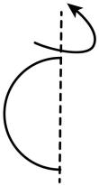
B．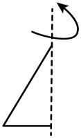
C．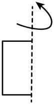
D．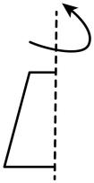
【答案】C
【分析】根据每一个几何体的特征，逐一判断即可解答．
【详解】解：A、图形绕虚线旋转一周后，得到的几何体是球体，故不符合题意；
B、图形绕虚线旋转一周后，得到的几何体是圆锥，故不符合题意；
C、图形绕虚线旋转一周后，得到的几何体是圆柱，故符合题意；
D、图形绕虚线旋转一周后，得到的几何体是圆台，故不符合题意；
故选：C．
【点睛】本题考查了点、线、面、体，熟练掌握每一个几何体的特征是解题的关键．
5．将一张正方形纸片按图①、图②所示的方式依次对折后，再沿图③中的虚线剪裁，最后将图④中的纸片打开铺平，所得到的图案是（ ）

A．
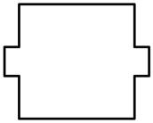
B． C．
C． D．
D．
【答案】B
【分析】根据题中所给剪纸方法，进行动手操作，答案就会很直观地呈现．
【详解】解：严格按照图中的顺序进行操作，展开得到的图形如选项B中所示，
故选：B．
【点睛】本题考查了剪纸问题，动手能力及空间想象能力，解题的关键是学生只要亲自动手操作，答案就会很直观地呈现．
【考点2 几何体的展开图】
1．下列选项中，左边的平面图形能够折成右边封闭的立体图形的是（ ）
A． B．
C．
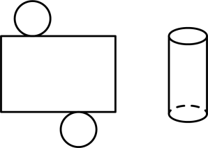
D．
【答案】C
【分析】本题考查了展开图折叠成几何体，熟记常见几何体的展开图是解题的关键．
根据几何体的展开图，可得答案．
【详解】解：A、不能折叠成正方体，故选项错误，不符合题意；
B、不能折成圆锥，故选项错误，不符合题意；
C、能折成圆柱，故选项正确，符合题意；
D、不能折成三棱柱，故选项错误，不符合题意．
故选：C．
2．（24-25七年级上·北京石景山·期末）下列图形中，能由正方体纸盒展开后得到的图形是（ ）
A．
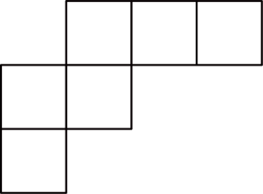
B．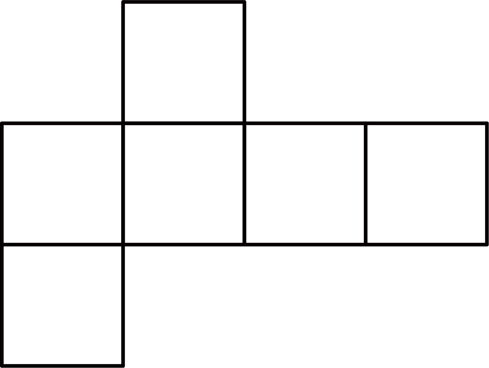
C． D．
D．
【答案】B
【分析】本题考查了正方体的展开图，根据正方体的展开图即可得出答案，掌握正方体的展开图是解题的关键
【详解】
解：由题意可知，上面四个图形中，能由正方体纸盒展开后得到的图形是，
故选：B．
3．如图所示的正方体的表面展开图是（ ）
A．
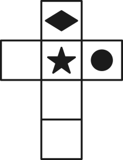
B．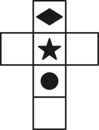
C． D．
D．
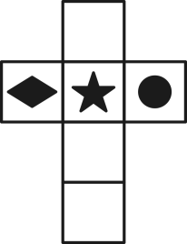
【答案】A
【分析】本题主要考查了几何体的展开图，熟知正方体展开图的各种情形是解题的关键．
由平面图形的折叠及正方体的展开图求解即可．
【详解】解：根据正方体的平面展开图的特征，B选项折叠后“菱形”和“圆”是相对面且在上面和下面；C选项折叠后“五角星”在正前面时，“圆”在下面，D选项折叠后，当“菱形”和“圆”在左侧和右侧且相对．在正面时，“正方形”在上面，“圆”在右侧面，故选项B、C、D均不合题意，
∴是该正方体的展开图的是A选项．
故选：A．
4．如图是一个正方体纸盒的展开图，当折成纸盒时，与数字6重合的数字是 ．

【答案】2
【分析】此题考查了正方体的展开图，熟练掌握空间想象能力是解题的关键．
一个点在展开图中“马走日”一次的点是正方体中相对的两个点，再“马走日”一次，就与原数字重合，由此即可求解．
【详解】解：由正方体展开图的特点可得，一个点在展开图中“马走日”一次的点是正方体中相对的两个点，
再“马走日”一次，就与原数字重合．
所以数字6“马走日”一次到数字9，数字9“马走日”一次到2，
所以与数字6重合的是数字2．
故答案为：2．
5．图1和图2中所有的正方形都相同，将图1的正方形放在图2中①②③④⑤的某一位置，所组成的图形能围成正方体的位置有（ ）

A．1个 B．2个 C．3个 D．4个
【答案】C
【分析】本题考查了正方体的展开图，熟知正方体的11种展开图是解题关键，据此即可求解．
【详解】解：将图1的正方形放在图2中①②③④⑤的某一位置，所组成的图形能围成正方体的位置有②③⑤三种情况，图1的正方形放在图2中①④的位置，会出现重叠的面，无法围成正方体．
故选：C
【考点3 截一个几何体】
1．（25-26七年级上·陕西·期中）用一个平面去截下面的几何体，不能得到三角形截面的是（ ）
A． B．
B．
C． D．
D．
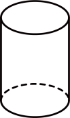
【答案】D
【分析】看所给选项的截面能否得到三角形即可．本题考查常见几何体的截面的形状，注意长方体的截面经过几个面就可得到几边形．
【详解】解：A、长方体的截面可能是三角形，或四边形，或五边形，或六边形，不符合题意；
B、三棱柱的截面可能是三角形，长方形，不符合题意；
C、圆锥的截面可能是圆，三角形，不符合题意；
D、圆柱的截面可能是圆，长方形，符合题意；
故选：D．
2．（24-25七年级上·陕西汉中·期末）用一个平面去截圆柱体，所得到的截面形状可能是圆还可能是 ．(写出一个符合条件的形状即可)
【答案】长方形或梯形或椭圆
【分析】此题考查了用一个平面去截几何体，截面的形状既与被截的几何体有关，还与截面的角度和方向有关．
用平面取截一个圆柱体，横着截时截面是椭圆或圆（截面与上下底平行），竖着截时，截面是长方形（截面与两底面垂直）或梯形．
【详解】用平面取截一个圆柱体，横着截时截面是椭圆或圆（截面与上下底平行）．
竖着截时，截面是长方形（截面与两底面垂直）或梯形．
故答案为：长方形或梯形或椭圆．
3．（24-25七年级上·重庆·期末）用一个平面取截一个三棱柱，最多可以截出 边形．
【答案】五
【分析】本题考查截一个几何体，用平面去截几何体，平面与几何体几个面相交，就产生几条交线，就形成几边形，三棱柱有五个面，截面最多与五个面相交，产生五条交线，形成五边形．
【详解】解：用一个平面去截一个三棱柱，截面最多可能是五边形．
故答案为：五．
【考点4 从不同方向看几何体】
1．（24-25七年级上·陕西西安·期末）如图是由5个相同的小正方体组成的立体图形，则从上面看得到的形状图是（ ）

A．
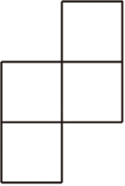
B．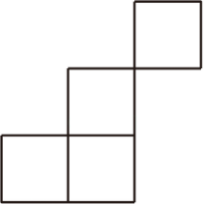
C． D．
D．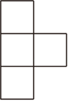
【答案】A
【分析】本题考查了从不同方向看几何体，找到从上面看所得到的图形即可．
【详解】解：从上面看，底层左边是一个小正方形，上层右边是一个小正方形,中间一层2个小正方形．
故选：A．
2．（24-25九年级下·全国·期末）根据下列从不同方向看物体的图形，几何体是 ．
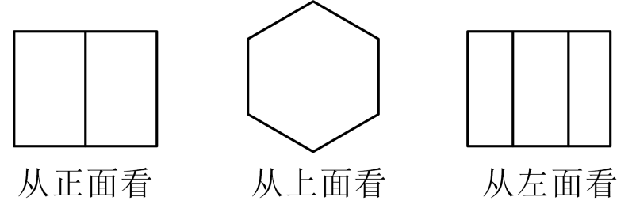
【答案】六棱柱
【分析】本题主要考查了从不同的方向看物体．根据从正面和从左面看到的图可知，该几何体为柱体，根据从上面看到的图可知，该几何体上下两个面均为六边形，即可得出该几何体为六棱柱．
【详解】解：根据从正面和从左面看到的图可知，该几何体为柱体，根据从上面看到的图可知，该几何体上下两个面均为六边形，故该几何体为六棱柱．
故答案为：六棱柱．
3．用一些大小相同的小正方体搭成一个几何体，使得从正面和上面看到的这个几何体的形状如图所示，那么组成这个几何体的小正方体的块数至少为（ ）

A．7 B．8 C．9 D．10
【答案】B
【分析】本题考查了从不同方向看几何体；从上面看可以看出最底层小正方体的个数，从正面看可以看出每一层小正方体的个数，从而算出总的个数．
【详解】解：∵从上面看有5个正方形，
∴最底层有5个正方体，
从正面看可得第2层最少有2个正方体，
从正面看可得第3层最少有1个正方体，
∴该组合几何体最少有5+2+1=8个正方体，
故答案为：8．
4．（24-25七年级上·四川成都·期末）一个几何体由几个大小相同的小立方块搭成，从它的正面和上面看到的形状图如图所示，若这个几何体最多由a个小立方块组成，最少由b个小立方块组成，则a+b= ．
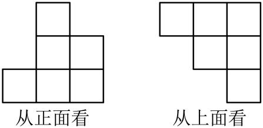
【答案】22
【分析】本题考查从不同方向看几何体的知识，根据从正面看得到这个组合体中小正方体的个数最多时的形状即可．
【详解】解：观察图形可知，这个几何体最多时，如图：
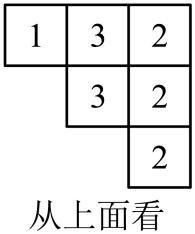
∴ a=1+3×2+2×3=13（个）．
这个几何体最少时，如图（一种情况）：
∴ b=1+3+1+2+1+1=9（个）．
∴a+b=13+9=22
故答案为：22．
【考点5 有理数的相关概念】
1．（25-26七年级上·江苏南通·阶段练习）下列语句正确的是（ ）．
①绝对值最小的数是0；②平方等于它本身的数只有1；③一个有理数在数轴上表示的点离开原点越远，这个有理数就越大；④倒数等于本身的数有0和±1；
A．4个 B．3个 C．2个 D．1个
【答案】D
【分析】本题主要考查了有理数与数轴，倒数，绝对值的定义，有理数的乘方计算，根据绝对值的非负性可判断①；根据平方的定义可判断②；根据有理数与数轴的关系可判断③；根据乘积为1的两个数互为倒数可判断④．
【详解】解：①绝对值最小的数是0，原说法正确；
②平方等于它本身的数只有1和0，原说法错误；
③一个有理数在数轴上表示的点离开原点越远，这个有理数的绝对值就越大，不代表这个有理数越大，原说法错误；
④倒数等于本身的数有±1，原说法错误；
∴说法正确的只有1个，
故选；D．
2．（24-25七年级上·陕西宝鸡·期末）小明的姐姐在银行工作，她把存入3万元记作+3万元，那么取出1万元记作 ．
【答案】−1万元
【分析】本题考查了正数和负数的意义，解题关键是理解“正”和“负”的相对性，确定一对具有相反意义的量．在一对具有相反意义的量中，先规定其中一个为正，则另一个就用负表示．
【详解】解：把存入3万元记作+3万元，那么取出1万元记作−1万元 ，
故答案为：−1万元．
3．（25-26七年级上·广东揭阳·阶段练习）下列四个数：−(−5),−3,−−4,+(−1)，其中负数的个数是（ ）
A．0个 B．1个 C．2个 D．3个
【答案】C
【分析】本题考查了正负数的定义，化简多重符号，绝对值，熟练地化简各数再作判断是解本题的关键．
先化简各数，再确定负数的个数．
【详解】解：−(−5)=5，−3=3，−−4=−4，+(−1)=−1，
∴负数有2个，
故选：C．
4．（25-26七年级上·安徽阜阳·阶段练习）若x为有理数，且式子2025−x−7存在最大值，则该最大值是（ ）
A．2024 B．2025 C．2026 D．2027
【答案】B
【分析】本题考查绝对值非负性，理解题意是解决问题的关键．
由题意可知，当x−7最小时，式子2025−x−7存在最大值，再结合x−7≥0可得当x−7=0时，2025−x−7取得最大值，为2025，即可得到答案．
【详解】解：当x−7最小时，式子2025−x−7存在最大值，
∵ x−7≥0，
∴当x−7=0时，2025−x−7取得最大值，为2025，
故选：B．
5．（25-26七年级上·天津南开·阶段练习）若x、y互为相反数，a、b互为倒数，c的绝对值等于4，则x+y3−−ab2025−c= ．
【答案】5或−3
【分析】本题考查了代数式求值，根据相反数、倒数的定义和绝对值的意义求出x+y、ab和c的值，再代入代数式计算即可求解，掌握以上知识点是解题的关键．
【详解】解：由题意得，x+y=0，ab=1，c=±4，
当c=−4时，
x+y3−−ab2025−c=0−−12025−−4=5；
当c=4时，
x+y3−−ab2025−c=0−−12025−4=−3；
∴x+y3−−ab2025−c=5或−3，
故答案为：5或−3．
6.（25-26七年级上·河南郑州·阶段练习）5个城市的国际标准时间（单位：时）在数轴上表示如图所示，那么北京时间2025年10月1日20时应是（ ）

A．纽约时间2025年10月1日5时 B．伦敦时间2025年10月1日12时
C．巴黎时间2025年10月1日7时 D．汉城时间2025年10月1日19时
【答案】B
【分析】本题考查数轴的应用，涉及利用数轴比较有理数大小，根据数轴上的国际标准时间得到北京时间与其他四个城市时间差即可得到答案，数形结合是解决问题的关键．
【详解】解：如图所示：
当北京时间是20时，对应：
纽约时间比北京时间早13个小时；
伦敦时间比北京时间早8个小时；
巴黎时间比北京时间早7个小时；
汉城时间比北京时间晚1个小时；
∴北京时间2025年10月1日20时，对应：
纽约时间是当天早上7时；
伦敦时间是当天中午12时；
巴黎时间是当天下午13时；
汉城时间是当天晚上21时．
故选：B．
【考点6 科学记数法】
1．（25-26七年级上·吉林长春·期末）2021年9月15日晚8点，第十四届全运会开幕式在西安奥体中心举行．西安奥体中心是西北功能最齐备、规模最大的体育中心，“一场两馆”呈“品”字形布局，总建筑面积52.05万平方米，数据52.05万用科学记数法表示准确的是（ ）
A．5.205×102 B．5.205×104 C．5.205×103 D．5.205×105
【答案】D
【分析】本题考查了科学记数法，科学记数法的表示形式为a×10n的形式，其中1≤a<10，n为整数，正确确定a以及n的值是解题的关键．确定n的值时，要看把原数变成a时，小数点移动了多少位，n的绝对值与小数点移动的位数相同，据此即可求解．
【详解】解：52.05万=520500=5.205×105，
故选：D．
2．（24-25七年级上·辽宁铁岭·期中）用科学记数法表示的数2.024×105的原数为 ．
【答案】202400
【分析】本题考查科学记数法，解题的关键是掌握用科学记数法表示数的方法．将小数点往右移5位即可得到原数．
【详解】解：2.024×105=202400
故答案为：202400．
3．（24-25七年级上·湖北武汉·期末）据统计，2023年武汉经济技术开发区（汉南区）有常住人口67.68万人，将数据67.68万用科学记数法表示为6.768×10n的形式，则n的值是 ．（备注：1万=10000）
【答案】5
【分析】本题考查了科学记数法的运用，掌握科学记数法的表示形式，确定a、n的值是解题的关键．科学记数法的表示形式为a×10n1≤a<10，把67.68万写成科学记数法形式，由此即可求解．
【详解】解：67.68万=676800=6.768×105=6.768×10n，
则n的值是5，
故答案为：5．
4．（24-25七年级下·辽宁沈阳·期末）按照央行发布的2024年金融统计数据，去年全国住户人民币存款增加了约14万亿元．一台点钞机的速度大约为每小时8×104张，按每天点钞7小时计算，如果让点钞机点一遍14万亿面值为100元的人民币，一台点钞机大约要点 天．
【答案】2.5×105
【分析】本题考查了同底数幂的除法运算、科学记数法，根据题意列出算式是解题的关键．先算出14万亿元人民币的张数，再根据同底数幂的除法法则以及科学记数法即可解答．
【详解】解：14万亿元=14000000000000，
即14万亿面值为100元的人民币为1.4×1011张，
1.4×1011÷7×8×104=2.5×105（天）．
故答案为：2.5×105．
【考点7 近似数】
1．（24-25七年级上·安徽合肥·期末）超越数主要有自然常数（e）和圆周率（π）．自然常数的知名度比圆周率低很多，但实际上自然数e是数学中的一个重要常数，它与指数函数、对数函数、复利增长、概率统计、微积分以及物理学和工程学等领域有着广泛的应用．e的出现使得我们能够更好地描述和理解自然界和现实世界中的增长、衰减和变化过程．其数值约为：e=2.718281828459045235360287471352⋯，下列对自然常数e取近似数正确的是（ ）
A．2.7（精确到十分位） B．2.71（精确到0.01）
C．2.719（精确到千分位） D．2.7182（精确到0.0001）
【答案】A
【分析】本题考查了近似数，根据四舍五入法进行判断即可求解，掌握四舍五入法是解题的关键．
【详解】解：A、自然常数e精确到十分位是2.7，该选项符合题意；
B、自然常数e精确到0.01是2.72，该选项不符合题意；
C、自然常数e精确到千分位是2.718，该选项不符合题意；
D、自然常数e精确到0.0001是2.7183，该选项不符合题意，
故选：A．
2．近似数3.70所表示的准确值a的范围是（ ）
A．3.60≤a<3.80 B．3.700≤a<3.705
C．3.695≤a<3.705 D．3.695≤a≤3.705
【答案】C
【分析】本题主要考查的是求近似数的取值范围，属于基础题型．近似数等于3.70的数有无数个，确定它们的范围应该从两个极端值进行分析．根据近似数3.70精确到百分位，是由千分位上的数字四舍五入得到的，结合四舍五入的方法，求出a的取值范围即可．
【详解】解：近似数3.70精确到百分位，是由千分位上的数字四舍五入得到的．
若千分位上的数字大于或等于5，百分位上的数字应是“9”，十分位上的数字应是“6”，此时a的最小值为3.695；
若千分位上的数字小于5，百分位上的数字应是“0”，十分位上的数字应是“7”，即此时a<3.705，
准确值a的范围是：3.695≤a<3.705．
故选：C．
3．（24-25七年级上·陕西商洛·期末）将数1.895（精确到百分位） ．
【答案】1.90
【分析】本题考查近似数，掌握精确到哪一位，就是对这位数后边的数位按照四舍五入原则处理是解决问题的关键．根据四舍五入原则，将1.895精确到百分位，就是将百分位以后的数位四舍五入，从而确定答案．
【详解】解：将数1.895（精确到百分位）为1.90
故答案为：1.90．
4．（24-25七年级上·河北保定·期末）数3.456用四舍五入法精确到0.1得到 ．
【答案】3.5
【分析】本题考查求一个数的近似数，利用四舍五入法进行求解即可．
【详解】解：3.456≈3.5；
故答案为：3.5．
【考点8 代数式的概念及其书写规则】
1．在12a<0，0，π，x+1x，0.2xyz，n−3，−m2中，代数式的个数是（ ）
A．4 B．5 C．6 D．7
【答案】C
【分析】本题考查了代数式的概念．代数式即用运算符号把数与字母连接起来的式子，根据这一概念逐个进行判定即可．
【详解】解：在12a<0，0，π，x+1x，0.2xyz，n−3，−m2中，
代数式有：0，π，x+1x，0.2xyz，n−3，−m2，共6个，
故选：C．
2．（25-26七年级上·全国·期中）下列式子中，符合代数式书写规范的是（ ）
A．a÷3 B．213ab C．a×3 D．ba
【答案】D
【分析】本题考查了代数式的书写要求．解题的关键是掌握代数式的书写要求：（1）在代数式中出现的乘号，通常简写成“⋅”或者省略不写；（2）数字与字母相乘时，数字要写在字母的前面；（3）在代数式中出现的除法运算，一般按照分数的写法来写．带分数要写成假分数的形式．
根据代数式的书写要求判断各项．
【详解】解：A、应写成a3，该选项错误，不符合题意；
B、应写成73ab，该选项错误，不符合题意；
C、应写成3a，该选项错误，不符合题意；
D.、该选项正确，符合题意；
故选：D．
3．（25-26七年级上·全国·期末）社会热点情境 国产3A 3A游戏大作《黑神话：悟空》中的许多建筑物模型均是在全国各地古迹实地扫描出来的，作为古建大省的山西则被采集最多，因此山西成为众多游客的打卡圣地，其中国庆假期第一天隰（xí）县小西天景区接待游客m人（m>1500），第二天接待游客人数比第一天的2倍少3000人，则代数式“m−3000”表示的意义是（ ）
A．第一天比第二天多接待的游客人数
B．两天一共接待的游客人数
C．第二天比第一天多接待的游客人数
D．第二天接待的游客人数
【答案】C
【分析】本题考查的是列代数式，代数式的意义，由题意可得第二天接待的游客人数为2m−3000人，结合2m−3000−m=m−3000，进一步分析即可．
【详解】解：第一天景区接待游客m人，因为第二天接待游客人数比第一天的2倍少3000人，
所以第二天接待的游客人数为2m−3000人，
所以第二天比第一天多接待的游客人数为2m−3000−m=m−3000人，
所以代数式“m−3000”表示的意义是第二天比第一天多接待的游客人数．
故选：C
【考点9 代数式的值】
1．已知当x=−2，y=3时，代数式−2x−y的值是（ ）
A． −1 B．1 C． −7 D．7
【答案】B
【分析】此题考查了代数式求值，将x=−2，y=3代入计算即可求出值．
【详解】解：当x=−2，y=3时，−2x−y=−2×−2−3=1，
故选：B．
2．（25-26七年级上·全国·期中）已知代数式3x2−2x+1的值为5，则代数式6x2−4x−3的值为（ ）
A．5 B．7 C．9 D．11
【答案】A
【分析】本题考查了代数式的整体代入求值，解题的关键是发现所求代数式6x2−4x−3与已知代数式3x2−2x+1的倍数关系，将3x2−2x作为整体进行计算．
由已知代数式3x2−2x+1=5，先求出3x2−2x的值；再观察到6x2−4x=2(3x2−2x)，代入3x2−2x的值计算出6x2−4x，最后减去3得到所求代数式的值，与选项匹配．
【详解】解：∵3x2−2x+1=5，
∴3x2−2x=5−1=4；
又∵6x2−4x=2(3x2−2x)，
∴6x2−4x−3=2×4−3=8−3=5．
故选：A．
3．（24-25七年级上·广东广州·期中）程序框图的算法思路源于我国古代数学名著《九章算术》中的“更相减损术”，根据如图的程序进行计算，若输入x的值为10，则输出的值为（ ）

A．5 B．6 C．8 D．10
【答案】C
【分析】本题主要考查代数式求值，根据数值转换机的要求需要两次输入才行．根据数值转换机列代数式，再代入计算即可求解．
【详解】解：由题意得当x=10时，0.5x=5<6，故继续输入，
当x=5时，x+3=5+3=8>6，故输出的值为8．
故选：C．
【考点10 单项式】
1．（24-25七年级上·甘肃兰州·期中）整式−0.3x2y，5，−3x+112，72abc2，13x2，a，−13ab2−4中单项式的个数有（ ）
A．3个 B．4个 C．5个 D．6个
【答案】C
【分析】本题考查了单项式的定义，根据单项式的定义判断即可，掌握单项式的定义是解题的关键．
【详解】解：−3x+112=−14x+112，
∴整式−0.3x2y，5，−3x+112，72abc2，13x2，a，−13ab2−4中单项式有−0.3x2y，5，72abc2，13x2，a，共5个，
故选：C．
2．（25-26七年级上·黑龙江哈尔滨·阶段练习）下列说法正确的是（ ）
A．1是单项式 B．5πR2的系数是5
C．23a2是5次单项式 D．x2y的系数是0
【答案】A
【分析】此题考查了单项式有关概念，根据单项式系数、次数的定义来求解，解题的关键是灵活掌握单项式的系数和次数的定义，单项式中数字因数叫做单项式的系数，所有字母的指数和叫做这个单项式的次数．
【详解】解：A、1是单项式，原说法正确，符合题意；
B、5πR2的系数是5π，原说法错误，不符合题意；
C、23a2是2次单项式，原说法错误，不符合题意；
D、x2y的系数是1，原说法错误，不符合题意；
故选：A．
3．（24-25六年级上·上海杨浦·期末）现有两个一次式，它们同时满足下述三个条件：①一次式中的字母均只含一个，为字母x；②一次项的系数互为相反数；③这两个一次式的和为−6，这两个一次式可以是 ．（写出满足条件的一组即可）
【答案】x−2和−x−4（答案不唯一）
【分析】本题考查了一次式的定义，相反数，一次式的加减运算，熟练掌握相关知识点是解题的关键．
根据一次式的定义，一次式的加减运算，即可得到答案．
【详解】解：设两个一次式分别是ax+b,−ax+c，
∴ax+b−ax+c=−6，
∴b+c=−6，
∴这两个一次式为x−2和−x−4，
故答案为：x−2和−x−4（答案不唯一） ．
【考点11 多项式】
1．代数式ab2,a+b2,ab2+b+1,3x+2y,x3+x2−3中，多项式有（ ）
A．2个 B．3个 C．4个 D．5个
【答案】B
【分析】本题主要考查了多项式的判断，
根据多项式和单项式的定义解答即可．数字和字母的乘积是单项式，单独的数也是单项式；几个单项式的和叫做多项式．
【详解】代数式ab2是单项式；
a+b2,ab2+b+1,x3+x2−3是多项式，
多项式有3个．
故选：B．
2．（25-26七年级上·吉林长春·期中）关于多项式−abx2−13x3+9的说法错误的是（ ）
A．有三项，次数是4 B．常数项为9
C．不含一次项 D．各项分别是−abx2，13x3，9
【答案】D
【分析】本题考查了多项式的相关概念，根据多项式的相关定义逐项分析即可得解，熟练掌握多项式的相关定义是解此题的关键．
【详解】解：A、多项式−abx2−13x3+9有三项，次数是4，故原说法正确，不符合题意；
B、多项式−abx2−13x3+9的常数项为9，故原说法正确，不符合题意；
C、多项式−abx2−13x3+9中不含一次项，故原说法正确，不符合题意；
D、多项式−abx2−13x3+9各项分别是−abx2，−13x3，9，故原说法错误，符合题意；
故选：D．
3．（25-26七年级上·湖南衡阳·期中）若多项式x2+2kxy−3y2+x−12不含xy项，则k2−1的值为 ．
【答案】−1
【分析】本题考查多项式的概念，掌握相关知识是解决问题的关键．多项式不含xy项，则其系数为零，即可求出k的值，进而求出所求代数式的值．
【详解】解：∵多项式x2+2kxy−3y2+x−12不含xy项，
∴2k=0
得k=0，
∴k2−1=−1．
故答案为：−1．
4．（24-25七年级上·湖南衡阳·期末）把多项式−1+3a3b2−4ab3+6b按b的降幂排列为 ．
【答案】−4ab3+3a3b2+6b−1
【分析】本题主要考查了多项式，先分清各项，再根据多项式降幂排列的定义解答．
【详解】解：多项式−1+3a3b2−4ab3+6b按b的降幂排列为：−4ab3+3a3b2+6b−1．
故答案为：−4ab3+3a3b2+6b−1．
【考点12 同类项与合并同类项】
1．（24-25七年级上·福建福州·期中）下列代数式中，不是整式的为（ ）
A．2m+2n B．x2−y2 C．a3+b3+c3 D．kx
【答案】D
【分析】本题考查了整式：整式是单项式和多项式的统称，其分母中不含字母，熟记整式的定义是解题关键．根据整式的定义逐项判断即可得．
【详解】解：A、2m+2n是多项式，是整式，则此项不符合题意；
B、x2−y2是多项式，是整式，则此项不符合题意；
C、a3+b3+c3是多项式，是整式，则此项不符合题意；
D、kx的分母中含有字母，不是整式，则此项符合题意；
故选：D．
2．（25-26七年级上·全国·课后作业）已知有下列各式：x2y,1a−1,1,2a−b5，−6m,x2−9x−4,a2b−abπ+53．其中单项式有x个，多项式有y个，整式有z个，则x+y+z= ．
【答案】10
【分析】本题考查的是多项式和单项式的概念，数或字母的积组成的式子叫做单项式，单独的一个数或字母也是单项式；几个单项式的和叫做多项式，每个单项式叫做多项式的项，其中不含字母的项叫做常数项．多项式中次数最高的项的次数叫做多项式的次数．
根据多项式，单项式和整式的概念解答即可．
【详解】解：单项式为：x2y，−1，则x=2，
多项式为：2a−b5，x2−9x−4，a2b−abπ+53，则y=3，
整式为：x2y，−1，2a−b5，x2−9x−4，a2b−abπ+53，则z=5，
则x+y+z=2+3+5=10，
故答案为：10.
3．（24-25七年级上·吉林·期末）写出代数式−3ab2的一个同类项 ．
【答案】ab2（答案不唯一）
【分析】本题考查了同类项的定义，解题的关键是熟练掌握同类项的定义．同类项：如果两个单项式，它们所含的字母相同，并且相同字母的指数也分别相同，那么就称这两个单项式为同类项．
根据同类项的概念求解即可，答案不唯一．
【详解】解∶∵代数式−3ab2的字母部分为ab2，
∴代数式−3ab2的同类项的字母部分为ab2，
∴ab2是代数式−3ab2的一个同类项，
故答案为：ab2（答案不唯一）．
4．（25-26七年级上·黑龙江佳木斯·阶段练习）若−3amb4与12a2bn是同类项，则m+n= ．
【答案】6
【分析】本题考查了同类项的概念，即“所含字母相同，并且相同字母的指数也分别相等的项叫做同类项”，属于基础题型，关键要令相同字母的指数相等列式计算．根据同类项的定义“相同字母的指数相等”，列式求解即可．
【详解】解：由题意得，m=2，n=4
∴m+n=6．
故答案为：6．
5．（24-25七年级上·青海海东·期末）计算：4x3y−−2x3y= ．
【答案】6x3y
【分析】本题考查了合并同类项，先把减法转化为加法，再合并同类项即可．
【详解】解：4x3y−−2x3y=4x3y+2x3y=6x3y．
故答案为：6x3y．
6．（24-25七年级上·重庆忠县·期末）若关于x，y的代数式x2y−axy+xy为单项式，则有理数a= ．
【答案】1
【分析】本题考查整式的加减运算，单项式的定义等知识点．由题意可知1−a=0，求值即可．
【详解】解：x2y−axy+xy=x2y+1−axy，
∵代数式x2y−axy+xy为单项式，
∴1−a=0，
∴a=1．
故答案为：1．
7．（24-25七年级上·浙江湖州·期末）已知m,n为常数，若单项式mxy5−n与多项式6xy2+2xy4相加得到的和是单项式，则m+n= ．
【答案】−3或−1
【分析】本题考查了合并同类项，熟练掌握合并同类项的运算法则是解题的关键．根据题意，得到mxy5−n+6xy2=0或mxy5−n+2xy4=0，得到系数和指数的对应关系，求出m，n的值，得到结果．
【详解】解：∵单项式mxy5−n与多项式6xy2+2xy4和是单项式，
当mxy5−n+6xy2=0时，
∴m=−6，5−n=2，
∴m=−6，n=3，
∴m+n=−3
当mxy5−n+2xy4=0，
∴ m=−2，5−n=4，
∴m=−2，n=1，
∴m+n=−1．
综上所述：m+n=−3或−1
故答案为：−3或−1．
【计算篇】
【考点13 有理数的混合运算】
1．（25-26七年级上·陕西·期中）计算：
(1)−3+−4−+11−−19；
(2)6×−3+25+−5；
(3)−34−59+712×36；
(4)−23−1−0.5×13×2−−32．
【答案】(1)1
(2)2
(3)−26
(4)−416
【分析】（1）根据有理数的加减运算法则计算即可；
（2）先进行乘法运算，再进行加法运算即可；
（3）利用乘法分配律计算即可；
（4）先进行乘方运算，再进行乘法运算，最后进行减法运算即可；
本题考查了有理数的混合运算，掌握有理数的运算法则和运算律是解题的关键．
【详解】（1）解：−3+−4−+11−−19
=−3−4−11+19
=−18+19
=1；
（2）解：6×−3+25+−5
=−18+25−5
=−18+20
=2；
（3）解：−34−59+712×36
=−34×36−59×36+712×36
=−27−20+21
=−26；
（4）解：−23−1−0.5×13×2−−32
=−8−12×13×2−9
=−8−16×−7
=−8+76
=−416．
2．（24-25七年级上·甘肃武威·期中）计算
(1)−0.5+(−15)−(−17)−|−12|
(2)−14+1−1−0.5×2÷2−−32
【答案】(1)−10.5
(2)−67
【分析】本题考查了有理数的混合运算，熟练掌握运算法则是解本题的关键；
（1）利用有理数加减法法则计算即可；
（2）按照混合运算顺序计算，先乘方，再乘除，最后算加减，有括号的要先算括号里面的．
【详解】（1）解：原式=−0.5+−15+17−12
=−15.5+17−12
=1.5−12
=1.5+−12
=−10.5；
（2）解：原式=−1+1−1−1÷2−9
=−1+1−0÷7
=−1+1÷7
=−1+17
=−1−17
=−67．
3．（25-26七年级上·江苏南京·阶段练习）请你仔细阅读下列材料并计算：
−130÷23−110+16−25
解法：简便计算，先求其倒数
原式的倒数为：23−110+16−25÷−130=23−110+16−25×−30=−20+3−5+12=−10
故−130÷23−110+16−25=−110
再根据你对所提供材料的理解，模仿以上方法进行计算：−156÷38−314+12−27.
【答案】−121
【分析】本题主要考查了有理数的混合运算，乘法分配律的运用，熟练掌握有理数混合运算的法则和乘法分配律是解题的关键.计算38−314+12−27÷−156，把除法变成乘法，再利用乘法分配律求解，所得结果取倒数即为答案.
【详解】解：原式的倒数为：
38−314+12−27÷−156
=38−314+12−27×−56
=−38×56+314×56−12×56+27×56
=−21+12−28+16
=−21，
∴−156÷38−314+12−27=−121．
故答案为−121.
4．（24-25七年级上·广东梅州·期中）（1）请你仔细阅读下列材料：计算：−130÷23−110+16−25
解法1：按常规方法计算
原式=−130÷23+16−110+25=−130÷56−12=−130×3=−110
解法2：简便计算，先求其倒数
原式的倒数为：23−110+16−25÷−130
=23−110+16−25×(−30)
=−20+3−5+12
=−10
故原式=−110
根据你对所提供材料的理解，选择合适的方法进行计算：−156÷38−314+12−27．
（2）阅读下题的计算方法：
计算−556+−923+1734+−312．
解：原式=−5+−56+−9+−23+17+34+−3+−12
=−5+−9+17+−3+−56+−23+34+−12
=0+−54
=−54
上面的这种解题方法叫拆项法，按此方法计算：−201756+−201623+403423+−112．
【答案】（1）−121；（2）−43
【分析】本题考查了有理数运算四则混合运算相关考点，解题关键在于掌握特定运算方法并灵活运用，具体解题思路围绕材料所给方法展开．
（1）有理数除法计算以及乘法分配律的运用．通过将除法转化为乘法，再利用乘法分配律简化计算过程，最终求出原式的值；
（2）有理数的加减混合运算中的拆项法．考查学生对拆项法这种特殊运算方法的理解和运用能力，利用该方法将复杂的有理数加减运算简化．
【详解】（1）解：原式的倒数为：38−314+12−27÷−156
=38−314+12−27×−56
=38×−56−314×−56+12×−56−27×−56
=−21+12−28+16
=−21，
∴−156÷38−314+12−27=−121；
（2）解：−201756+−201623+403423+−112
=−2017+−56+−2016+−23+4034+23+−1+−12
=−2017+−2016+4034+−1+−56+−23+23+−12
=0+−43
=−43．
【考点14 整式的加减与化简求值】
1．化简或先化简后求值
(1)x2+2x+3x2−23x；
(2)已知a+3+b−122=0，求代数式2a2b+2ab2−2a2b−1+3ab2+2的值．
【答案】(1)4x2
(2)34
【分析】本题考查的是整式的加减运算及求值、绝对值及平方的非负性，
（1）先去括号，再合并同类项即可；
（2）根据绝对值及平方的非负性求出a、b值，再进行整式加减运算并代入求值即可．
【详解】（1）解：x2+2x+3x2−23x
=x2+2x+3x2−2x
=4x2；
（2）解：∵a+3+b−122=0，
∴a+3=0,b−12=0，
解得：a=−3,b=12，
2a2b+2ab2−2a2b−1+3ab2+2
=2a2b+2ab2−2a2b+2−3ab2−2
=−ab2，
当a=−3,b=12时，
−ab2=−−3×122
=34．
2．（24-25七年级上·甘肃武威·期中） A=4x2−4xy+y2 ， B=x2+xy−5y2，求3A−2B−2A+B的值．
【答案】x2−7xy+16y2
【分析】本题主要考查了整式的加减运算，掌握整式的加减运算法则是解题的关键．
先化简3A−2B−2A+B，再将A=4x2−4xy+y2、B=x2+xy−5y2代入计算即可．
【详解】解：3A−2B−2A+B
=3A−2B−2A−B
=A−3B
=4x2−4xy+y2−3x2+xy−5y2
=4x2−4xy+y2−3x2−3xy+15y2
=x2−7xy+16y2．
3．（24-25七年级上·河南驻马店·期末）已知A=3a2b−2ab2+abc，晓风错将“2A−B”看成“2A+B”，算得结果C=4a2b−3ab2+4abc．
(1)计算B的表达式；
(2)求正确的结果的表达式；
(3)晓华说（2）中的结果的大小与c的取值无关，对吗？若a=18，b=15，求（2）中代数式的值．
【答案】(1)−2a2b+ab2+2abc
(2)8a2b−5ab2
(3)结果的大小与c的取值无关，0
【分析】本题主要考查整式的加减，涉及的知识有：去括号、合并同类项，熟练掌握运算法则是解题的关键；
（1）由2A+B=C得B=C−2A，将C、A代入计算可得；
（2）将A、B代入2A−B计算即可；
（3）由化简后的代数式中无字母c可知其值与c无关，将a、b的值代入计算即可.
【详解】（1）解：∵2A+B=C
∴B=C−2A
=4a2b−3ab2+4abc−2(3a2b−2ab2+abc)
=4a2b−3ab2+4abc−6a2b+4ab2−2abc
=−2a2b+ab2+2abc.
故B的表达式为−2a2b+ab2+2abc.
（2）解：2A−B=2(3a2b−2ab2+abc)−(−2a2b+ab2+2abc)
=6a2b−4ab2+2abc+2a2b−ab2−2abc
=8a2b−5ab2.
故正确的结果的表达式为8a2b−5ab2.
（3）解：由（2）得2A−B=8a2b−5ab2
∵代数式中无字母c
∴其值与c无关是对的
将a=18，b=15代入得：
2A−B=8a2b−5ab2=8×(18)2×(15)−5×(18)×(15)2=140−140=0.
4．（24-25七年级上·福建福州·期中）课堂上数学老师写出一个关于x的整式ax2+bx−1−4x2−3x（其中a、b为常数），然后让同学给a、b赋予不同的数值进行计算．
(1)甲同学给出了a=5，b=−1，请按照甲同学给出的数值化简整式；
(2)乙同学给出了一组数据，最后计算的结果为2x2+3x−1，求此时a、b的值；
(3)丙同学给出一组数，计算的最后结果与x的取值无关，请求出丙同学给出的a、b的值并算出整式的最后结果．
【答案】(1)x2+2x−1
(2)a=6，b=0
(3)a=4，b=−3，原式=−1
【分析】（1）把a、b的值代入，再去括号、合并同类项即可；
（2）由题意可得ax2+bx−1−4x2−3x=2x2+3x−1，即得ax2+bx−1=6x2−1，进而根据多项式相等的条件即可求解；
（3）先化简整式，再根据计算的最后结果与x的取值无关， 可得含x项的系数为0，进而求出a、b的值及整式的最后结果；
本题考查了整式的加减，整式的加减无关型问题，掌握整式的加减运算法则是解题的关键．
【详解】（1）解：把a=5，b=−1代入式子得，
原式=5x2−x−1−4x2−3x
=5x2−x−1−4x2+3x
=x2+2x−1；
（2）解：由题意得，ax2+bx−1−4x2−3x=2x2+3x−1，
∴ax2+bx−1=2x2+3x−1+4x2−3x，
即ax2+bx−1=6x2−1，
∴a=6，b=0；
（3）解：ax2+bx−1−4x2−3x=ax2+bx−1−4x2+3x=a−4x2+b+3x−1，
∵计算的最后结果与x的取值无关，
∴a−4=0，b+3=0，
∴a=4，b=−3，
此时原式=−1．
5．（1）已知A=−x+2y−4xy，B=−3x−y+xy．当x+y=67，xy=−1时，求2A−3B的值．
（2）是否存在数m，使化简关于x，y的多项式mx2−x2+3x+1−5x2−4y2+3x的结果中不含x2项？若不存在，说明理由；若存在，求出m的值．
【答案】（1）17；（2）m=6
【分析】本题主要考查了整式的化简求值，整式加减中的无关型问题：
（1）先根据整式的加减计算法则求出2A−3B=7x+y−11xy，据此利用整体代入法计算求解即可；
（2）先去括号，然后合并同类项把原多项式化简为m−6x2+4y2+1，再根据不含x2项得到m−6=0，则m=6．
【详解】解：∵A=−x+2y−4xy，B=−3x−y+xy，
∴2A−3B
=2−x+2y−4xy−3−3x−y+xy
=−2x+4y−8xy+9x+3y−3xy
=7x+7y−11xy
=7x+y−11xy，
当x+y=67，xy=−1时，原式=7×67−11×−1=6+11=17；
（2）mx2−x2+3x+1−5x2−4y2+3x
=mx2−x2+3x+1−5x2+4y2−3x
=m−6x2+4y2+1，
∵关于x，y的多项式mx2−x2+3x+1−5x2−4y2+3x的结果中不含x2项，
∴m−6=0，
∴m=6．
【实际应用篇】
【考点15 有理数的实际应用】
1．（25-26七年级上·吉林四平·阶段练习）近几年来，我国新能源汽车产销量都大幅增加，小明家新换了一辆新能源纯电汽车，他连续7天记录了每天行驶的路程（如表），以50km为标准，多于50km的记为“+”，不足50km的记为“−”，刚好50km的记为“0”．
第一天 | 第二天 | 第三天 | 第四天 | 第五天 | 第六天 | 第七天 | |
路程（km） | −6 | −10 | −18 | +24 | +22 | +30 | +28 |
(1)这7天里路程最多的一天比最少的一天多走________km；
(2)请求出小明家的新能源汽车这七天平均每天行驶了多少km？
(3)已知汽油车每行驶100km需用汽油7升，汽油的价格为8元/升，而新能源汽车每行驶100km耗电量为15度，每度电为0.6元，请估计小明家换成新能源汽车后这7天的行驶费用比原来节省多少元？
【答案】(1)48．
(2)60km．
(3)这7天的行驶费用比原来节省197.4元．
【分析】本题主要考查了正负数的意义、平均数的计算以及费用的计算，熟练掌握正负数的运算和相关公式是解题的关键．
（1）找出表格中最大和最小的数，求差得到最多的一天比最少的一天多走的路程；
（2）先计算七天与标准路程差值的平均数，再加上标准路程50km得到平均每天行驶的路程；
（3）分别计算汽油车和新能源车七天的行驶费用，再求差值得到节省的费用．
【详解】（1）解：最多的一天：+30，最少的一天：−18
30−(−18)=48(km)，
故答案为：48．
（2）解： (−6−10−18+24+22+30+28)÷7
=(−34+104)÷7
=70÷7
=10，
50+10=60(km)，
答：这七天平均每天行驶了60km．
（3）解：七天总路程：60×7=420(km)
汽油车费用：420÷100×7×8=235.2（元）
新能源车费用：420÷100×15×0.6=37.8（元）
235.2−37.8=197.4（元）
答：这7天的行驶费用比原来节省197.4元．
2．（24-25七年级上·河南郑州·期末）在巴黎奥运会上，中国体育健儿以为国而战的情怀，顽强拼搏的信念，团结协作的品质，为祖国和人民赢得了荣誉，生动地诠释了新时代中国精神，成为广大青少年的榜样，掀起了运动的热潮．某校七年级乒乓球社团人数增加，需购买一批乒乓球拍和乒乓球，已知一副乒乓球拍比一盒乒乓球贵20元，买12副乒乓球拍和8盒乒乓球共需640元．
(1)求一副乒乓球拍和一盒乒乓球的价格各是多少元；
(2)在“双12”促销活动中，某体育用品商店制订以下优惠方案：
方案一：商品按原价打9折优惠；
方案二：商品按原价出售，每满200元返30元；
方案三：商品按原价出售，超过800元的部分打7折优惠；
现计划购买23副乒乓球拍和20盒乒乓球，请通过计算说明按照哪种方案购买较为合算．
【答案】(1)一副乒乓球拍的价格为40元，一盒乒乓球的价格为20元
(2)按照方案二购买较为合算，见解析
【分析】本题主要考查了方程的实际应用，有理数四则混合计算的实际应用，正确理解题意列出方程和对应的算式是解题的关键．
（1）设一副乒乓球拍的价格是x元，则一盒乒乓球的价格是x−20元，根据买12副乒乓球拍和8盒乒乓球共需640元建立方程求解即可；
（2）根据所给的优惠方案，分别计算出三种优惠方案下的费用，比较即可得到结论．
【详解】（1）解：设一副乒乓球拍的价格是x元，则一盒乒乓球的价格是x−20元，
根据题意，得12x+8x−20=640，
解得x=40，
∴40−20=20．
答：一副乒乓球拍的价格为40元，一盒乒乓球的价格为20元．
（2）解：方案一：23×40+20×20×0.9=1188（元）．
方案二：23×40+20×20=1320元，
1320÷200=6…120，
1320−30×6=1140（元）．
方案三：800+23×40+20×20−800×0.7=1164（元）．
∵1188>1164>1140，
∴按照方案二购买较为合算．
3．（25-26七年级上·浙江·期中）根据背景素材，探索解决问题．
周末小明一家打算去露营基地野餐 | |
素材1 | 野餐准备计划路线图：家→炸鸡店→面包店→水果店→奶茶店→露营基地； |
素材2 | 这条路线近似看成东西走向．如果规定向东为正，向西为负，他这天行车里程（单位：km）如下：−3，+6，+2.5，−5，−12； |
素材3 | 滴滴车价目表：起步价（不超过3km时）车费8元，超过3km时，超出部分每千米车费加价2元，原价消费满10元赠送一张8折优惠券和一张7折优惠券（每种优惠券只能使用一次）． |
问题解决 | |
任务1 | 求露营基地在家的哪个方向，并求出与家的距离； |
任务2 | 计算炸鸡店到面包店所用的车费； |
任务3 | 说说该路线如何正确使用优惠券，使总车费最低，并求出最低总车费． |
【答案】任务1：露营基地在家的西边11.5km处；任务2：14元；任务3：水果店到奶茶店用8折券，奶茶店到露营基地用7折券，共用车费57.8元
【分析】此题考查了有理数混合运算的应用．根据题意正确列式是解题的关键．
任务1：根据题意列出算式计算即可；
任务2：根据题意列出算式计算即可；
任务3：先求出水果店到奶茶店的原价费用和奶茶店到露营基地的原价费用，再根据水果店到奶茶店用8折券，奶茶店到露营基地用7折券进行计算即可．
【详解】解：任务1：由题意可得：−3+6+2．5−5−12=−11．5km，
答：露营基地在家的西边11．5km处；
任务2：由题意可得：8+6−3×2=14（元），
答：炸鸡店到面包店所需费用14元；
任务3:：由题意可得水果店到奶茶店的原价费用为8+5−3×2=12（元），
奶茶店到露营基地的原价费用为8+12−3×2=26（元），8<12<26
则水果店到奶茶店用8折券，奶茶店到露营基地用7折券，8+14+8+8+5−3×2×0．8+8+12−3×2×0．7=57．8（元）
答：水果店到奶茶店用8折券，奶茶店到露营基地用7折券，共用车费57.8元．
4．（25-26七年级上·吉林长春·期中）
怎样邮寄崇武鱼卷更经济？ 崇武鱼卷是泉州十大名小吃之一，以鱼肉为主料，可直接食用，也可切成片状调菜食用，还可切成片状、丝状经油炸或烹调加工制成各种花色品种． 泉小五家的崇武鱼卷每年通过网络进行包邮销售，因此需要支出较多快递费． | |||||||||||
素材1 | 一客户在泉小五家定了10箱崇武鱼卷，每箱以10千克为标准，超过的千克数记为正数，不足的千克数记为负数，记录如表所示：
| ||||||||||
素材2 | 据调查，某快递公司收费标准：首重1千克以内8元(含1千克)，续重(超过1千克的部分)2元/千克，不足1千克按1千克计，超过20千克的需要额外支付包装费30元． | ||||||||||
素材3 | 据泉小五家常年的邮寄经验，包裹越大，崇武鱼卷受损率越高．一个包裹不超过20千克，崇武鱼卷几乎无受损；一个包裹质量超过20千克，不超过80千克，崇武鱼卷的受损率估计为2%；一个包裹质量在80千克至120千克之间，崇武鱼卷的受损率估计为5%，破损部分由泉小五家按售价进行赔偿，返还给顾客相应现金． | ||||||||||
问题解决 | |||||||||||
任务1 | 计算这10箱崇武鱼卷的总质量． | ||||||||||
任务2 | 方案一：分10箱邮寄，每箱一个包裹； 方案二：10箱打成一个大包裹邮寄． 今年崇武鱼卷的成本价为6元/千克，售价为12元/千克．邮寄10箱崇武鱼卷哪种方案利润更高？ | ||||||||||
任务3 | 结合任务2，请你设计一种邮寄方案，使得这10箱崇武鱼卷获利最大，并求出最大利润． | ||||||||||
【答案】任务1：这10箱崇武鱼卷的总质量为100千克；任务2：方案一利润更高；任务3：见解析，362(元)
【分析】本题主要考查了有理数的混合运算的应用，解题的关键是正确分析题意并列出算式．
任务1：根据表格中的数据列出算式求解即可；
任务2：根据方案一和方案二的计算方法分别求解判断即可；
任务3：将重量为10.3千克和一箱9.8千克的崇武鱼卷单独邮寄，剩下8箱两两打包为3个20千克的包裹和1个19.9千克的包裹，再计算邮费，进而求得最大利润．
【详解】解：任务1：10×10+0.3×1+0.1×4−0.1×3−0.2×2=100(千克)，
∴这10箱崇武鱼卷的总质量为100千克；
任务2：由表格可得，10+0.3=10.3，10+0.1=10.1，10−0.1=9.9，10−0.2=9.8，
∴10箱崇武鱼卷中重量为10.3的有1箱，重量为10.1的有4箱，重量为9.9的有3箱，重量为9.8的有2箱，
方案一：
8×10+(10+1−1)×2+(10+1−1)×2×4+(10−1)×2×3+(10−1)×2×2=270，
邮寄10箱崇武鱼卷的利润为(12−6)×100−270=330(元)；
方案二：
∵这10箱崇武鱼卷的总质量为100千克，
∴8+(100−1)×2+30=236，
邮寄10箱崇武鱼卷的利润为(12−6)×100−236−100×5%×12=304(元)；
∵330>304，
∴方案一利润更高．
任务3：将重量为10.3千克和一箱9.8千克的崇武鱼卷单独邮寄，剩下8箱两两打包为3个20千克的包裹和1个19.9千克的包裹，
则邮费为：
8×6+(10+1−1)×2+(9+1−1)×2+(20−1)×2×3+(19+1−1)×2=238(元)，
利润为 (12−6)×100−238=362(元)．
【考点16 整式加减的实际应用】
1．（24-25七年级上·湖南株洲·期末）三位家长决定带领a名孩子（a不少于3）在“元旦”期间去同安方特景区旅游，春光旅行社的收费标准是成人全价，孩子半价；华夏旅行社收费标准是成人、孩子一律八折优惠，这两家旅行社的基本价相同，都是500元．
(1)用代数式表示这三位家长和a名孩子分别参加这两家旅行社所需的总费用；
(2)如果你是其中的一名孩子，你认为选择哪一家旅行社较为合算？为什么？
【答案】(1)选择春光旅行社所需的总费用为(250a+1500)元；选择华夏旅行社所需的总费用为400a+1200元
(2)选择春光旅行社较为合算，理由见解析
【分析】本题考查了列代数式以及整式的加减，根据各数量之间的关系，用含a的代数式表示出选择两旅行社所需的总费用是解题的关键.
1利用总价=单价×数量，结合两旅行社给出的收费标准，即可用含a的代数式表示出选择两旅行社所需的总费用；
2选择春光旅行社较为合算，将1的两代数式作差，结合a≥3，可得出150(2−a)<0，即250a+1500<400a+1200，进而可得出选择春光旅行社较为合算．
【详解】（1）解：根据题意得：选择春光旅行社所需的总费用为500×3+500×0.5a=(250a+1500)元；
选择华夏旅行社所需的总费用为500×0.8(3+a)=(400a+1200)元；
（2）选择春光旅行社较为合算，理由如下：
250a+1500−(400a+1200)=150(2−a)，
∵a≥3，
∴2−a<0，
∴150(2−a)<0，
即250a+1500<400a+1200，
∴选择春光旅行社较为合算．
2．把正整数1，2，3，4，…，排列成如图1所示的一个表，从上到下分别称为第1行、第2行、…，用图2所示的方框在图1中框住16个数，把其中没有被阴影覆盖的四个数分别记为A，B，C，D，设A=x．

(1)在图1中，2021排在第 行第 列；
(2)A−B+C−D的值是否为定值？如果是，请求出它的值；如果不是，请说明理由；
(3)将图1中的奇数都改为原数的相反数，偶数不变．
①设此时图1中排在第m行第n列的数（m，n都是正整数）为w，请用含m，n的代数式表示w；
②此时A+B−C−D的值是否为定值？如果是，请求出它的值；如果不是，请说明理由；
【答案】(1)253，5
(2)是定值，定值为0，理由见详解
(3)①当n是奇数时，w=−8m−1+n=−8m+8−n；当n是偶数时，w=8m−1+n=8m−8+n ②不为定值，理由见详解
【分析】本题考查规律型问题，需要用代数式表示出一般规律，并能构建等式通过解简易方程求值，解题的关键是理解题意，学会探究规律、利用规律解决问题，学会探究复杂问题中的等量关系．
（1）探究规律，利用规律即可解决问题；
（2）分别用含x的代数式表示出A、B、C、D，然后列出代数式，化简即可解决问题；
（3）①分奇数、偶数两种情形讨论即可；
②分奇数、偶数两种情形讨论，分别构建简单的等量关系即可解决问题．
【详解】（1）解：2021÷8=252⋯5，
∴2021排在第253行第5列，
故答案为：253，5；
（2）解：是定值，定值为0，理由如下：
设A=x，方框框住16个数，
则D=x+3,B=x+24,C=x+27，
∴A−B+C−D=x−x−24+x+27−x−3=0；
（3）解：①当n是奇数时，w=−8m−1+n=−8m+8−n；
当n是偶数时，w=8m−1+n=8m−8+n；
②不是定值，理由吐下：
设A=x，方框框住16个数，
当C,D为奇数时，D=−x−3,B=x+24,C=−x−27，
此时，A+B−C−D=x+x+24+x+27+x+3=4x+54；
当C,D为偶数时，D=−x+3,B=x−24,C=−x+27，
此时，A+B−C−D=x+x−24+x−27+x−3=4x−54；
∴A+B−C−D的值不为定值．
3．（24-25七年级上·福建福州·期中）每年“双11”天猫商城都会推出各种优惠活动进行促销，今年，张阿姨在“双11”到来之前准备在三家天猫店铺中选择一家购买原价均为1000元/条的被子若干条．已知三家店铺在非活动期间，均在原价基础上优惠20%销售，活动期间在此基础上再分别给予以下优惠：
A店铺：“双11”当天购买可以再享受8折优惠；
B店铺：商品每满800元可使用店铺优惠券50元，同时每满400元可使用商城“双11”购物津贴券50元，同时“双11”当天下单每单还可立减60元（例如：购买2条被子需支付800×2−50×2−50×4−60=1240元）；
C店铺：“双11”当天下单可享立减活动：①每条立减100元（购买10条以内，不包括10条）；
②每条立减160元（10条及10条以上）．享受“立减”优惠后，店铺还可实行分期付款，先付总购物款的一半，一年后再一次性付清余下的货款（注：银行一年定期的年利率为3%）．
(1)若在A店铺5条被子作一单购买，需支付______元．
若在B店铺5条被子作一单购买，需支付______元．
若在C店铺5条被子作一单购买，至一年后全部付清共用去______元．
(2)若张阿姨在“双11”当天下单，且购买了a条同款被子，请分别用含a的代数式表示在这三家店铺的购买费用．（说明：张阿姨要买的a条被子作一单购买）
【答案】(1)3200，3190，3500
(2)640a，650a−60，当0<a<10时, 700a；当a≥10时, 649.6a
【分析】本题考查列代数式，解答本题的关键是明确题意，列出相应的代数式．
（1）根据题意可以分别得到三家店铺需要支付的费用；
（2）根据题意可以用代数式表示出在三家店铺的购买费用．
【详解】（1）解：在A店铺5条被子作一单购买，需支付：5×1000×1−20%×0.8=3200（元），
在B店铺5条被子作一单购买,需支付：
5×1000×1−20%−50×5−50×10−60=3190（元），
在C店铺5条被子作一单购买,至一年后全部付清共用去：
5×1000×1−20%−5×100=3500（元），
故答案为：3200，3190，3500；
（2）解：在A店铺a条被子作一单购买,需支付：1000a1−20%×0.8=640a（元），
在B店铺a条被子作一单购买,需支付：
1000a1−20%−50a−50×2a−60=650a−60元，
当0<a<10时，在C店铺a条被子作一单购买，至一年后全部付清共用去：
1000a1−20%−100a=700a（元），
当a≥10时,在C店铺a条被子作一单购买,至一年后全部付清共用去：
1000a1−20%−160a×121+1+3%=649.6a（元）．
【规律与新定义篇】
【考点17 数式规律问题】
1．（24-25七年级上·云南保山·期末）观察这列单项式：2x,4x2,8x3,16x4,⋯，按此规律排列，第6个单项式是（ ）
A．32x6 B．64x6 C．64x7 D．128x7
【答案】B
【分析】本题是单项式的规律题，根据题意可得规律，第n个单项式为2nxn，据此即可得到答案．
【详解】解：由题意可知，第n个单项式的系数为2n，次数为n，
∴第n个单项式为2nxn，
∴第6个单项式为26x6=64x6．
故选：B．
2．观察下列算式：
21=2,22=4,23=8,24=16,25=32,26=64,27=128,28=256，…，根据上述算式中的规律，你认为220的个位数字是（ ）
A．2 B．4 C．6 D．8
【答案】C
【分析】通过已知数据发现个位数字分别是2、4、8、6、2、4、8、6……四个一循环，
【详解】解：通过观察发现，个位数字分别是2、4、8、6、2、4、8、6……四个一循环，所以220的个位数字和24的个位数字相同是6．
故选C．
【点睛】本题主要考查了有理数乘方和数字规律，准确分析计算是解题的关键．
3．（24-25七年级上·广东茂名·期末）在“点燃我的梦想，数学皆有可能”数学创新设计活动中，“智多星”小强设计了一个数学探究活动；对依次排列的两个整式m，n按如下规律进行操作：
第1次操作后得到整式串m，n，n−m；
第2次操作后得到整式串m，n，n−m，−m；
第3次操作后…
其操作规则为：每次操作增加的项，都是用上一次操作得到的最末项减去其前一项的差，小强将这个活动命名为“回头差”游戏．
则该“回头差”游戏第2024次操作后得到的整式串各项之和是（ ）
A．m+n B．m C．2n−m D．2n
【答案】C
【分析】本题考查了整式的加减运算，规律的探究，通过运算发现式子的规律是解题的关键．
根据整式串的运算，得到整式串的和的规律，即可得到结果．
【详解】解：第1次操作后得到整式串m，n，n−m，和为2n，
第2次操作后得到整式串m，n，n−m，−m，和为2n−m，
第3次操作后得到整式串m，n，n−m，−m，−n，和为n−m，
第4次操作后得到整式串m，n，n−m，−m，−n，−n+m，和为0，
第5次操作后得到整式串m，n，n−m，−m，−n，−n+m，m，和为m，
第6次操作后得到整式串m，n，n−m，−m，−n，−n+m，m，n，和为n+m，
第7次操作后得到整式串m，n，n−m，−m，−n，−n+m，m，n，n−m，和为2n，
第8次操作后得到整式串m，n，n−m，−m，−n，−n+m，m，n，n−m，−m，和为2n−m，
……
观察可以得到第7次操作后的整式串的和与第1次操作后的和相同，
∴每6次操作后，整式串的和重复一次，
∵2024÷6=337……2，
∴2024次操作后得到的整式串各项之和与第2次操作后的整式串的和的结果一样，为2n−m，
故选：C．
4．探究规律，完成相关题目．薛老师说：“我定义了一种新的运算，叫※运算．”薛老师写出了一些按照※运算法则进行运算的式子：
+2※+4=−6；
−3※−4=−7；
−2※−3=−5；
+5※−6=+11；
0※+9=−9；
−7※0=+7．
请你按照薛老师的运算法则计算：−2021※+2022= ．
【答案】4043
【分析】根据题意可以得到可以得到※的运算法则为：两数进行※运算时，同号得负，异号得正，0和任何数进行※运算都等于这个数的相反数，任何数与0进行※运算都等于这个数的相反数，由此求解即可．
【详解】解：+2※+4=−+2++4=−6，−3※−4=−−3+−4=−7，−2※−3=−−2+−3=−5，+5※−6=+5+−6=+11，0※+9=0+−9=−9，−7※0=−7+0=+7，
由此可以得到※的运算法则为：两数进行※运算时，同号得负，异号得正，0和任何数进行※运算都等于这个数的相反数，任何数与0进行※运算都等于这个数的相反数，
∴−2021※+2022=−2021++2022=4043，
故答案为：4043．
【点睛】本题主要考查了数字类的规律问题，解题的关键在于能够根据题意找到※的运算法则．
5．（24-25七年级上·河南新乡·期末）干支纪年法是中国自古以来就一直使用的纪年方法，干支是天干和地支的总称．干支纪年法的组合方式是天干在前，地支在后，以十天干和十二地支循环配合，每个组合代表一年，60年为一个循环．我们把天干、地支按顺序排列，且给它们编上序号．天干的计算方法是：年份减3，除以10所得的余数；地支的计算方法是：年份减3，除以12所得的余数．以2022年为例：天干为(2022−3)÷10=201⋯⋯9；地支为(2022−3)÷12=168⋯⋯3；对照天干地支表得，2022年为农历壬寅年．
1 | 2 | 3 | 4 | 5 | 6 | 7 | 8 | 9 | 10 | 11 | 12 | |
天干 | 甲 | 乙 | 丙 | 丁 | 戊 | 己 | 庚 | 辛 | 壬 | 癸 | ||
地支 | 子 | 丑 | 寅 | 卯 | 辰 | 巳 | 午 | 未 | 申 | 酉 | 戌 | 亥 |
依据上述规律推断2025年为农历 年．
【答案】乙巳
【分析】本题考查有理数运算的实际应用．根据题意，列出算式进行计算后，判断即可．掌握天干，地支的确定方法，正确的列出算式，是解题的关键．
【详解】解：由题意，得：天干为：2025−3÷10=202⋯⋯2，
地支为：2025−3÷12=168⋯⋯6，
∴2025年为农历乙巳年；
故答案为：乙巳．
6．观察下列等式．
11×2=1−12，12×3=12−13，13×4=13−14，
将以上三个等式两边分别相加得：
11×2+12×3+13×4=1−12+12−13+13−14=1−14=34．
(1)猜想并写出：1nn+1=______．
(2)直接写出下列各式的计算结果：
①11×2+12×3+13×4+⋅⋅⋅+12022×2023=______；
②11×2+12×3+13×4+⋅⋅⋅+1nn+1=______．
(3)探究并计算：
①11×3+13×5+15×7+⋅⋅⋅+12021×2023．
②11×3−12×4+13×5−14×6+15×7+⋅⋅⋅+12021×2023−12022×2024．
【答案】(1)1n−1n+1
(2)①20222023，②nn+1
(3)①10112023②2025×10112023×4048
【分析】此题考查了数字类规律探索以及有理数的混合运算，利用规律计算即可解决问题；解题的关键是学会探究规律，利用规律解决问题．
【详解】（1）解：1n(n+1)=1n−1n+1，
故答案为1n−1n+1．
（2）①11×2+12×3+13×4+…+12022×2023=1−12+12−13+…+12022−12023=1−12023=20222023，
②11×2+12×3+13×4+…+1n(n+1)=1−12+12−13+…+1n−1n+1=1−1n+1=nn+1
故答案为20222023，nn+1．
（3）①11×3+13×5+15×7+…+12021×2023
=12(1−13+13−15+15−17+…+12021−12023)=12(1−12023)=10112023
②11×3−12×4+13×5−14×6+15×7+⋅⋅⋅+12021×2023−12022×2024
=(11×3+13×5+…+12021×2023)−(12×4+14×6+…+12022×2024)
=12(1−13+13−15+…+12021−12023)−12(12−14+14−16+…+12022−12024)
=12(1−12023)−12(12−12024)
=10112023−10114048
=2025×10112023×4048
【考点18 图形规律问题】
1．（24-25七年级上·广西贵港·期末）如图，根据图中方格内数的规律，a−b的值是（ ）
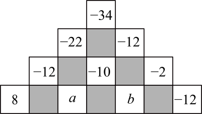
A．30 B．−30 C．18 D．2
【答案】B
【分析】本题考查了数字规律探索，方程的求解，根据图形可得肩上的两个数之和为顶部的数据，列出式子8+a=−12，a+b=−10，求出结果即可．
【详解】解：由图像可知，肩上的两个数之和为顶部的数据，
∴8+a=−12，a+b=−10，
解得：a=−20，b=10，
∴a−b=−20−10=−30，
故选：B．
2．（24-25七年级上·广西南宁·期末）如图所示，第1个图案中有1个正方形，第2个图案中有3个正方形，第3个图案中有5个正方形，⋯⋯，按此规律排列下去，若第n个图案中有2025个正方形，则n= _____．

【答案】1013
【分析】本题考查图形类规律探究，解方程．观察图形，发现后一个图案比前一个图案多2个正方形，即可得到第n个图案有2n−1个正方形，解方程2n−1=2025即可解答．
【详解】解：第1个图案中有1个正方形，而1=2×1−1；
第2个图案中有3个正方形，而3=2×2−1；
第3个图案中有5个正方形，而5=2×3−1；
⋯⋯，
第n个图案中有有2n−1个正方形，
当2n−1=2025时，n=1013．
故答案为：1013
3．（24-25七年级上·陕西渭南·期末）如图是由相同大小的小圆圈按一定规律组成的，其中第①个图形中共有6个小圆圈，第②个图形中共有9个小圆圈，第③个图形中共有12个小圆圈，……，按此规律，则第24个图形中小圆圈的个数为（ ）
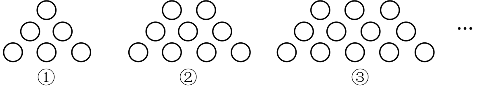
A．75个 B．72个 C．69个 D．66个
【答案】A
【分析】本题考查了图形的变化类问题，仔细观察图形，找到图形中圆形个数的通用公式，然后代入n=24求解即可．
【详解】解：观察图形得：
第①个图形有3+3×1=6个圆圈，
第②个图形有3+3×2=9个圆圈，
第③个图形有3+3×3=12个圆圈，
…
第n个图形有3+3n=3n+1个圆圈，
当n=24时，3×24+1=75个圆圈，
故选：A．
4．（24-25七年级上·河南平顶山·期末）如图所示，数轴上O，A两点的距离为12，一动点P从点A出发，按以下规律跳动：第1次跳动到AO的中点A1处，第2次从A1点跳动到A1O的中点A2处，第3次从A2点跳动到A2O的中点A3处．按照这样的规律继续跳动到点A4，A5，A6…An（n≥3，n）是整数）处，问经过这样2024次跳动后的点与A1A的中点的距离是（ ）

A．12−3×122021 B．9−3×122021 C．12−3×122022 D．9−3×122022
【答案】D
【分析】本题主要考查了图形类的规律，数轴上两点的距离，，准确分析计算是解题的关键．根据题意得出An表示的数为12×12n，则点A2024表示的数为12×122024，在得出A1A的中点表示的数为9，即可解答．
【详解】解：根据题意可得：
∵数轴上O，A两点的距离为12，
∴点A表示的数为12，
A1表示的数为12×12=6，
A2表示的数为12×122=3，
A3表示的数为12×123，
A4表示的数为12×124，
……
An表示的数为12×12n，
∴经过这样2023次跳动后的点A2023表示的数为12×122023，
∵点A表示的数为12，A1表示的数为6，
∴A1A的中点表示的数为12+62=9，
∴经过这样2024次跳动后的点与A1A的中点的距离为9−12×122024=9−3×4×122024=9−3×122022，
故选：D．
【考点19 新定义问题】
1．（24-25七年级上·浙江杭州·期中）对于任意有理数m，n定义一种新运算：m⊕n=n−m−m+n．
(1)若a=−6，b=7，求a⊕b的值；
(2)已知点A，点B在数轴上表示的数分别为−1，x，且A，B两点的距离是7，y是−−−5的相反数，求x⊕y⊕−1的值．
【答案】(1)12
(2)−20或−2
【分析】本题考查了新定义的运算，有理数的加减混合运算，数轴上两点的距离，绝对值的化简，相反数的定义，理解新定义运算规则，熟练掌握有理数的运算法则是解题的关键．
（1）根据新定义运算规则直接计算即可；
（2）先根据数轴上两点的距离和相反数的定义得出x，y的值，然后根据新定义计算x⊕y，最后计算x⊕y⊕−1即可．
【详解】（1）解：∵m⊕n=n−m−m+n，
∴a⊕b=−6⊕7=7−−6−−6+7=13−1=12；
（2）解：∵点A，点B在数轴上表示的数分别为−1，x，且A，B两点的距离是7，
∴−1−x=7，
∴x=−8或6，
∵y是−−−5的相反数，且−−−5=−5，
∴y=5，
当x=−8时，x⊕y=−8⊕5=5−−8−−8+5=13−3=10，
∴x⊕y⊕−1=10⊕−1=−1−10−10+−1=−11−9=−20，
当x=6时，x⊕y=6⊕5=5−6−6+5=−1−11=−12，
∴x⊕y⊕−1=−12⊕−1=−1−−12−−12+−1=11−13=−2，
综上所述，x⊕y⊕−1的值为−20或−2．
2．观察下列两个等式：2−13=2×13+1，5−23=5×23+1给出定义如下：我们称使等式a−b=ab+1成立的一对有理数“a，b”为“共生有理数对”，记为a，b，如：数对2，13，5，23都是“共生有理数对”．
(1)通过计算判断数对1，2是不是“共生有理数对”；
(2)若m，n是“共生有理数对”，则−n，−m “共生有理数对”；（填“是”或“不是”）
(3)如果m，n是“共生有理数对”，且m−n=4，求−5mn的值．
【答案】(1)不是；
(2)是；
(3)−125．
【分析】本题主要考查新定义、有理数的混合运算、代数式求值、整式的加减运算等知识点，理解“共生有理数对”的定义是解题关键．
（1）根据“共生有理数对”的定义判断即可；
（2）根据“共生有理数对”的定义可求出m−n=mn+1，从而通过计算可证−n−−m=m−n=mn+1=−n⋅−m+1，即得出−n，−m是 “共生有理数对”；
（3）根据“共生有理数对”的定义可求出m−n=mn+1，即可求出mn=3，然后代入计算即可．
【详解】（1）解：∵1−2=−1，1×2+1=3，
∴1−2≠1×2+1，
∴数对1，2不是“共生有理数对”；
（2）解：∵m，n是“共生有理数对”，
∴m−n=mn+1，
∴−n−−m=m−n=mn+1=−n⋅−m+1，
∴−n，−m是“共生有理数对”．
故答案为：是．
（3）解：∵m，n是“共生有理数对”，
∴m−n=mn+1，
∵m−n=4，
∴mn=3，
∴−5mn=−53=−125．
3．（25-26七年级上·江苏南京·阶段练习）观察下列两个等式：2×1=22+1−3，−1×1=−12+1−3.给出定义：我们称使等式ab=a2+b−3成立的一对有理数a，b为“方和有理数对”，记为a,b，如2,1，−1,1都是“方和有理数对”．
(1)数对−2,1，5,5.5中是“方和有理数对”的是______．
(2)请你再写出一对符合条件的“方和有理数对”：______(注意：不能与题目中已有的“方和有理数对”重复)．
(3)若m,2是“方和有理数对”，求2m−4m2−32m−1的值．
【答案】(1)5,5.5
(2)3,3（答案不唯一）
(3)−7
【分析】本题主要考查了新定义问题、有理数的混合运算、整式加减中的化简求值，解题时要熟练掌握并能读懂新定义是关键．
（1）依据题意，“方和有理数对”的定义逐个判断可以得解；
（2）依据题意，由“方和有理数对”a,b满足ab=a2+b−3，则当a=3时，b=3，则此时3,3，进而可以得解；
（3）依据题意，由m,2是“方和有理数对”，则m2=2m+1，又2m−4m2−32m−1=2m−4m2+32m−1=−4m2+8m−3，从而代入计算可以得解．
【详解】（1）由题意，∵−2×1=−2,−22+1−3=2，
∴数对−2,1不是“方和有理数对”．
∵5×5.5=27.5,52+5.5−3=27.5，
∴数对5,5.5是“方和有理数对”．
故答案为：5,5.5．
（2）由题意，
∵“方和有理数对”a,b满足ab=a2+b−3，
∴当a=3时，b=3，则此时3,3．
故答案为：3,3（答案不唯一）．
（3）由题意，m,2是“方和有理数对”，
∴2m=m2+2−3．
∴m2=2m+1．
又∵2m−4m2−32m−1=2m−4m2+32m−1
=2m−4m2+6m−3
=−4m2+8m−3，
∴2m−4m2−32m−1=−42m+1+8m−3
=−8m−4+8m−3
=−7．
【压轴篇】
【考点20 数轴上的折叠与裁剪问题】
1．（24-25七年级上·辽宁鞍山·期中）数形结合在数学学习中至关重要．数学课上老师让同学们将数轴对折探究其中的数学问题．

(1)如图1，第一小组的同学将数轴对折，使表示2的点与表示−2的点重合；
①对折后表示5的点与表示________的点重合；
②对折后表示m的点与表示________的点重合；（用含m的代数式表示）
(2)如图2，第二小组的同学将数轴对折，使表示3的点与表示−1的点重合；
①对折后表示7的点与表示________的点重合；
②对折后数轴上的点A与点B重合（点A在点B的左侧），且点A与点B之间的距离为8，则点A表示的数为________，点B表示的数为________；
(3)如图3，第三小组的同学将数轴对折，使数a表示的点C与数b表示的点D重合(a<b)，经对折后数轴上的点E与点F重合（点E在点F的左侧），且点E和点F之间的距离为12，则点E表示的数为________，点F表示的数为________．（用含a，b的代数式表示）
【答案】(1)①−5，②−m
(2)①−5，②−3，5；
(3)a+b−122，a+b+122
【分析】本题考查了数轴、数轴上两点之间的距离，熟练掌握数轴上两个的点的中点为两点表示的数相加除以2是解题的关键．
（1）①先求出对折点所表示的数，再根据数轴的定义即可得；②根据对折点，利用数轴的定义即可得；
（2）①先求出对折点所表示的数，再根据数轴的定义建立方程，解方程即可得；②根据对折点，利用数轴的定义即可求得A，B两点表示的数；
（3）利用a，b表示出对折点，再根据点E和点F之间的距离为20，利用数轴的定义即可表示出E，F．
【详解】（1）解：对折点为2+(−2)2=0，
①对折后与表示5的点重合的点表示的数为0−(5−0)=−5；
②对折后与表示m的点重合的点表示的数为0−(m−0)=−m，
故答案为：①−5，②−m；
（2）对折点为3+(−1)2=1，
对折后与表示7的点重合的点表示的数为1−(7−1)=−5；
②∵点A与点B之间的距离为8，
∴点A与点B到对折点的距离为8÷2=4，
∵点A在点B的左侧，
∴点A表示的数为1−4=−3，点B表示的数为1+4=5，
故答案为：①−5；②−3；5；
（3）∵使a表示的点C与b表示的点D重合(a<b)，
∴对折点为a+b2，
∵点E和点F之间的距离为12，
∴点E与点F到对折点的距离为12÷2=6，
∴点E表示的数为a+b2−6=a+b−122，点F表示的数为a+b2+6=a+b+122，
故答案为：a+b−122；a+b+122．
2．（24-25七年级上·重庆丰都·期末）如图，在一条可以折叠的数轴上，从左往右依次有A、B、C三个点，它们表示的数分别是a、b、c，已知AB=12，如果以原点O为折点，将这条数轴向右对折，此时点A与点B重合，且BC=5．

(1)填空：a= ，c= ．
(2)若点C以每秒4个单位长度的速度向右运动，与此同时，点A和点B分别以每秒3个单位长度和1个单位长度的速度向左运动．设运动时间为t秒，AB−12OC的值是否随着时间t的变化而改变？请说明理由．
(3)在（2）的条件下，以点B为折点，将这条数轴向右对折，点A落在数轴上的对应点为M，当t为何值时，线段MC的长度为5？
【答案】(1)−6，11
(2)AB−12OC的值不会随着时间t的变化而改变，理由见解析
(3)4或23
【分析】本题考查了数轴、整式的加减的应用、方程的应用，熟练掌握数轴的性质是解题关键．
（1）先求出OA=OB=6，再根据数轴的性质求解即可得；
（2）运动t秒后，点C表示的数为11+4t，点A表示的数为−6−3t，点B表示的数为6−t，根据数轴的性质可得AB，OC的长，由此即可得；
（3）设点M表示的数为x，利用数轴的性质可求出x的值，再根据MC=5建立方程，解方程即可得．
【详解】（1）解：∵以原点O为折点，将这条数轴向右对折，此时点A与点B重合，
∴OA=OB，
∵OA+OB=AB=12，
∴OA=OB=6，
∴a=−6,b=6，
∵BC=5，
∴c−b=5，
∴c=b+5=6+5=11，
故答案为：−6，11．
（2）解：由题意得：运动t秒后，点C表示的数为11+4t，点A表示的数为−6−3t，点B表示的数为6−t，
∴此时AB=6−t−−6−3t=2t+12，OC=11+4t，
∴AB−12OC=2t+12−1211+4t
=2t+12−112−2t
=132，
所以AB−12OC的值不会随着时间t的变化而改变．
（3）解：设点M表示的数为x，
由题意得：运动t秒后，点C表示的数为11+4t，点A表示的数为−6−3t，点B表示的数为6−t，
∵以点B为折点，将这条数轴向右对折，点A落在数轴上的对应点为M，
∴−6−3t+x2=6−t，
解得x=18+t，
∴MC=18+t−11+4t=5，
解得t=4或t=23，
答：当t为4或23时，线段MC的长度为5．
3．（24-25七年级上·山西·期中）综合与探究
数轴是一个非常重要是数学工具，它使数和数轴上的点建立起对应关系，揭示了数与点之间的内在联系，是“数形结合”的基础．如图1，在数轴上点A表示a，点B表示数b，点C表示数c，其中b为绝对值最小的数，a与c满足a+2+c−102=0．

(1)a=______，b=______，c=______
(2)若沿点B折叠纸面，使点B左侧部分和右侧部分重合，则与点A重合的点表示的数为________；若折叠纸面，使点A与点C重合，则与点B重合的点表示的数为______．
(3)如图2，在数轴上剪下B到C的部分（不考虑宽度），并把这部分沿点D所在的位置折叠，然后在重叠部分某处剪开，得到三部分．若这三部分的长度之比为2:2:6，求点D，B之间的距离．
【答案】(1)−2,0,10
(2)2，8
(3)3或5或7
【分析】本题考查用数轴上的点表示有理数、数轴上两点间的距离及绝对值的非负性，数轴的翻折问题，解题的关键是分类讨论．
（1）根据绝对值和偶次方的非负性求出a,c，再根据绝对值的性质求出b的值．
（2）根据数轴上两点间距离及线段中点表示即可解决；
（3）根据数轴上点的表示及线段中点定义即可求出．
【详解】（1）解：∵a+2+c−102=0，
∴a=−2，c=10，
∵b为绝对值最小的数，
∴b=0，
故答案为：−2，0，10．
（2）解：根据（1）可得：点A表示的数是−2，点B表示的数是0，点C表示的数是10，
若沿点B折叠纸面，使点B左侧部分和右侧部分重合，则与点A重合的点表示的数为=2×0−−2=2；
若折叠纸面，使点A与点C重合，则AC的中点为−2+102=4，即沿数4的点折叠纸面，
与点B重合的点表示的数为=4×2−0=8；
故答案为：2，8．
（3）解：∵线段BC=10−0=10，这三条线段的长度之比为2:2:6，
∴10÷(2+2+6)=1，
∴这三条线段的长度分别为2,2,6，
若剪下的从左到右第一条线段长为2，第2条线段长度也为2时，
则点D，B之间的距离：2+2÷2=3；
若剪下的从左到右第一条线段长为2，第2条线段长度为6，
则点D，B之间的距离为：2+6÷2=5；
若剪下的从左到右第一条线段长为6，第2条线段长度为2，
则点D，B之间的距离为：6+2÷2=7；
∴点D，B之间的距离为3或5或7．
【考点21 利用绝对值的几何意义求最值】
1．（24-25六年级上·上海·期中）求x−1+2x−1+3x−1+⋅⋅⋅+99x−1的最小值．
【答案】4057
【分析】本题主要考查了绝对值的意义，有理数的运算．原式整理得x−1+2x−12+3x−13+⋅⋅⋅+99x−199，即表示x到1的距离，2倍x到12的距离，3倍x到13的距离，⋯，99倍x到199的距离之和，求得在x=170取得最小值，据此求解即可．
【详解】解：∵x−1+2x−1+3x−1+⋅⋅⋅+99x−1
=x−1+2x−12+3x−13+⋅⋅⋅+99x−199，
∴x−1+2x−1+3x−1+⋅⋅⋅+99x−1表示x到1的距离，2倍x到12的距离，3倍x到13的距离，⋯，99倍x到199的距离之和，
∵1+2+3+⋯+99=1+99×992=4950（偶数），
∴当x为第2475、2476项所对应的数时，x−1+2x−1+3x−1+⋅⋅⋅+99x−1有最小值．
经计算：1+2+3+⋯+69=2415<2475且1+2+3+⋯+70=2485>2476，
∴当x=170取得最小值，
原式=1−170+1−270+1−370+⋯1−7070+7170−1+7270−1+⋯+9970−1
=6970+6870+6770+⋯+170+0+170+270+⋯+2970
=343570+1+29×292×70
=3412+8714
=4057．
2．（24-25七年级上·江苏宿迁·期中）阅读下列材料，并回答问题．我们知道a|的几何意义是指数轴上表示数a的点与原点的距离，那么|a−b|的几何意义又是什么呢？我们不妨考虑一下，取特殊值时的情况．比如考虑|5−(−6)|的几何意义，在数轴上分别标出表示−6和5的点，（如图所示），两点间的距离是11，而|5−(−6)|=11，因此不难看出|5−(−6)|就是数轴上表示−6和5两点间的距离，|a−b|的几何意义是数轴上a，b两数对应点之间的距离．

(1)当x−23=2时，求出x的值；
(2)设Q=|x+6|−|x−5|，请问Q是否存在最大值，若没有请说明理由，若有请求出最大值；
(3)设Q=|x−2|+|x−4|+|x−6|+|x−8|+…+|x−2024|，求Q的最小值，此时x的取值范围是多少？
【答案】(1)−43或83
(2)Q有最大值11
(3)1012≤x≤1014
【分析】本题考查了方程的应用和数轴上两点间的距离、化简绝对值，掌握分类讨论的数学思想是解题关键．
（1）|x−23|是数轴上表示x和23两点间的距离，据此即可求解；
（2）分类讨论①x≤−6、②−6<x<5、③x≥5即可求解；
（3）先求出|x−2|+|x−2024|、|x−4|+|x−2022|...|x−1012|+|x−1014|的最小值，再求出=|x−2|+|x−4|+|x−6|+|x−8|+…+|x−2024|的最小值即可．
【详解】（1）解：由题意得：|x−23|是数轴上表示x和23两点间的距离，
∵ |x−23|=2，
∴ x=23+2=83或x=23−2=−43；
（2）解：|x+6|−|x−5|是数轴上表示x的点到表示−6、5两点间的距离之差，
①x≤−6时，|x+6|−|x−5|=−(x+6)+x−5=−11；
②−6<x<5时，|x+6|−|x−5|=x+6+x−5=2x+1<11；
③x≥5时，|x+6|−|x−5|=x+6−(x−5)=11；
综上所述，当x≥5时，Q有最大值11；
（3）解：∵|x−2|+|x−4|+|x−6|+|x−8|+…+|x−2024|表示数x到2、4、6、...、2024的距离之和，
而2、4、6、...、2024共有1012个偶数，
要使Q的值最小，根据已知阅读材料可知：
|x−2|+|x−2024|的最小值为：2024−2=2022(2≤x≤2024)，
|x−4|+|x−2022|的最小值为：2022−4=2018(4≤x≤2022)，
...，
|x−1012|+|x−1014|的最小值为1014−1012=2(1012≤x≤1014)，
∴Q的最小值为：2022+2018+2014+...+6+2
=(2022+2)+(2018+6)+...+(1014+1010)
=2532024+2024+...+2024︸
=2024×253
=512072．
此时x的取值范围是1012≤x≤1014．
【考点22 多绝对值的分类讨论问题】
1．数轴上A、B、C对应的数分别是a、b、c．
(1)若ac<0,a=−a,a+b>0,b<c．
①请将a、b、c填入括号内．
②化简a−b+a+c−c−b．
③若点X在数轴上表示的数为x，则x−a+x−b+x−c有最小值__________．
(2)若a+b+c=a+b−c，且c≠0，求c−3−a+b−c+1的值．
【答案】(1)①见解析；②2b；③c−a；
(2)2
【分析】（1）①根据ac<0,a=−a,a+b>0,b<c，得到a<0,c>0,b>0,c>b，故a<0<b<c，根据数轴上靠近右边的数大于左边的数，填上即可．②根据a<0<b<c，a<b<c，判定a−b<0,a+c>0,c−b>0，去绝对值化简计算即可．③根据两点之间线段最短，故当x=b时，取得最小值，化简计算即可．
（2）分a+b+c>0,a+b+c<0两种情况计算．
【详解】（1）①∵ac<0,a=−a,a+b>0,b<c，
∴a<0,c>0,b>0,c>b，
故a<0<b<c，填图如下：
②∵a<0<b<c，a<b<c，
∴a−b<0,a+c>0,c−b>0，
∴a−b+a+c−c−b
=b−a+a+c−c+b=2b．
③∵a<0<b<c，
根据两点之间线段最短，
故当x=b时，x−a+x−b+x−c有最小值，
且x−a+x−b+x−c
=b−a+0+c−b
=c−a，
故答案为：c−a．
（2）当a+b+c>0时，
则a+b+c=a+b+c，
∵a+b+c=a+b−c，
∴a+b+c=a+b−c，
∴c=0，
∵c≠0，
故不成立；
当a+b+c<0时，
则a+b+c=−a−b−c，
∵a+b+c=a+b−c，
∴−a−b−c=a+b−c，
∴a+b=0，
∴c=−c
∴c<0，
∴c−3−a+b−c+1
=−c+3−1+c=2．
【点睛】本题考查了绝对值的化简，数轴上有理数大小的比较，线段最短的应用，熟练掌握绝对值的化简，数的大小比较是解题的关键．
2．（24-25七年级上·浙江宁波·阶段练习）已知关于x的方程x−2−b=a有四个解，化简a+ba+b+b−ab−a+aa+bb．
【答案】4
【分析】本题考查的是绝对值的相关计算，理解绝对值方程四个解的意义，判断绝对值符号中的每个代数式的正负是解题的关键．由x−2−b=a可化简得x−2=b±a,在化简的过程中判断a,b,a+b,b−a的符号，从而化简求值即可．
【详解】解：对于关于x的方程x−2−b=a有四个解，
可知a,b均不为0，且a≠b，a>0，
∴a=a，
将原方程整理可得x−2=b±a，
∴a+b>0，b−a>0，
∴a+b>a+b，b−a>b−a，b>a>0，
∴b=b，
∴a+ba+b+b−ab−a+aa+bb=1+1+1+1=4．
3．【总结提炼】
小明学习了绝对值的性质后，有这样的思考和总结：当a>0时，a=a，则aa=aa=1；当a<0时，a=−a，则aa=−aa=−1．
【解决问题】
（1）若ab>0，则aa+bb= ．
（2）若abc<0，则aa+bb+cc= ．
【拓展提升】
（3）若abcabc+abab+aa=1，计算：bcbc−bb−acac=_________．
【答案】（1）−2或2（2）−3或1；（3）1或−1或3
【分析】（1）分a<0,b<0和a>0,b>0，两种情况进行讨论求解即可；
（2）分 a,b,c中有一个负数和三个均为负数，两种情况进行讨论求解；
（3）分a<0，和a>0，两种情况，进行讨论求解．
【详解】解：（1）∵ab>0，
∴a,b同号，
当a<0,b<0时：aa+bb=−1−1=−2；
当a>0,b>0时：aa+bb=1+1=2；
故答案为：−2或2；
（2）∵abc<0，
∴有两种情况：有一个负数和两个正数或三个均为负数，
当a<0,b<0,c<0时，则：aa+bb+cc=−1−1−1=−3；
当有两个正数和一个负数时，假设：a>0,b>0,c<0，则：aa+bb+cc=1+1−1=1；
故答案为：−3或1；
（3）∵abcabc+abab+aa=1，
∴abc,ab,a中有两正一负，
①当a<0时：则：abc,ab均为正，
∴b<0,c>0，
∴bcbc−bb−acac=bc−bc−−bb−−acac=−1+1+1=1；
②当a>0时，则：abc,ab一正一负，
若b>0，则：c<0，此时：bcbc−bb−acac=bc−bc−bb−ac−ac=−1−1+1=−1；
如b<0，则：c<0，此时：bcbc−bb−acac=bcbc−−bb−ac−ac=1+1+1=3；
综上，原式=1或−1或3．
故答案为：1或−1或3
【点睛】本题考查化简绝对值，有理数乘法的符号法则．熟练掌握绝对值的性质，利用分类讨论的思想进行求解，是解题的关键．
【考点23 由整式加减解决整除问题】
1．（24-25七年级下·河北石家庄·期末）（1）列式：设abc是一个三位数，则abc用含a，b，c的代数式表示为 ；
定义：如果一个三位数的三个数位上的数字是按从小到大排列的三个连续的正整数，则这个三位数叫作顺子数，如“123”“456”等都是顺子数．请你再举出一个顺子数： ；
推理：嘉嘉经过观察计算发现顺子数都可以被3整除．设abc1≤a≤7是一个顺子数．
（2）请用含a的代数式表示b和c；
（3）通过整式的运算，证明上述发现的结论．
【答案】（1）100a+10b+c；789（答案不唯一）；（2）b=a+1，c=a+2；（3）见解析
【分析】本题考查了新定义，整式的运算，读懂题意，熟练掌握整式的运算法则是解题的关键．
（1）根据多位数的表示方法列出含a，b，c的代数式即可；根据顺子数的定义，写出一个顺子数即可；
（2）根据顺子数的定义，百位数为a，十位数为a+1，个位数为a+2可得到结果；
（3）把顺子数表示为100a+10a+1+a+2，整理为337a+4，证得结论．
【详解】（1）解：三位数abc可表示为：100a+10b+c；
再举出一个顺子数：789（答案不唯一）；
故答案为100a+10b+c；789（答案不唯一）；
（2）由题意得，b=a+1，c=a+2；
（3）证明：100a+10b+c
=100a+10a+1+a+2
=100a+10a+10+a+2
=111a+12
=337a+4，
∵1≤a≤7，a是正整数，
∴37a+4为正整数，
∴顺子数都可以被3整除．
2．（24-25七年级上·福建泉州·期中）在数的学习过程中，我们总会对其中一柴具有某种特性的数充满好奇，例如：定义：对于一个各个数位上的数字均不为零的三位自然数m，若m的十位数字等于其个位数字的2倍，则称这个自然数m为“好数”，当三位自然数m为“好数”时，交换m的百位数字和十位数字后会得到一个新的三位自然数n，规定F(m)=m−n90，例如：当m=384时，因为8=4×2，所以384是“好数”，此时n=834，则F(m)=m−n90=384−83490=−5．
(1)写出最大的好数和最小的好数，并分别求出它们的F(m)值；
(2)已知一个三位自然数t是“好数”，t的各个数位上的数字和记为k，若F(t)+k能被8整除，求所有满足条件的三位自然数t．
【答案】(1)984，1；121，−1
(2)342，284，684，742
【分析】本题考查新定义下的运算和整式加减的应用，解题的关键是掌握“好数”的特征．
（1）根据“好数”的定义确定各个数位上的数字，然后根据F(m)的定义计算其值；
（2）先设出三位自然数t的百位、十位、个位数字，根据“好数”定义和F(m)的定义表示出F(t)和k，再根据F(t)+k能被8整除来确定满足条件的数．
【详解】（1）解：∵是三位自然数且各个数位上的数字均不为零，要使“好数”最大，百位数字应尽量大，
∴百位最大是9．
根据“好数”定义，十位数字等于个位数字的2倍，个位数字最大只能是4，此时十位数字是8，
∴最大的好数m=984，
交换m的百位数字和十位数字后得到n=894，
∵F(m)=m−n90，
∴F(984)=984−89490=1；
要使“好数”最小，百位数字应尽量小，
∴百位最小是1，个位数字最小是1，
∴十位数字是2，
∴最小的好数m=121，
交换m的百位数字和十位数字后得到n=211，
∵F(m)=m−n90，
∴F(121)=121−21190=−1；
（2）设三位自然数t的百位数字为a，个位数字为b，则十位数字为2b，
∴t=100a+20b+b=100a+21b，
交换t的百位数字和十位数字后得到n=100×2b+10a+b=200b+10a+b=10a+201b，
∵F(m)=m−n90，
∴F(t)=(100a+21b)−(10a+201b)90=a−2b，
∵t的各个数位上的数字和k=a+2b+b=a+3b，
∴F(t)+k=(a−2b)+(a+3b)=2a+b，
∵F(t)+k能被8整除，即2a+b能被8整除，
当2a+b=8时：
若b=2，则2a+2=8，解得a=3，此时t=342；
若b=4，则2a+4=8，解得a=2，此时t=284；
当2a+b=16时：
若b=4，则2a+4=16，解得a=6，此时t=684；
若b=2，则2a+2=16，解得a=7，此时t=742．
综上所述，所有满足条件的三位自然数t为342，284，684，742．
【考点24 整式加减解决图形周长问题】
1．（24-25七年级上·海南海口·期中）如图，在矩形ABCD中，有正方形AEGF，正方形JHMI，正方形KLCM，问：知道哪个正方形的面积可以得到两个阴影部分的周长之差．
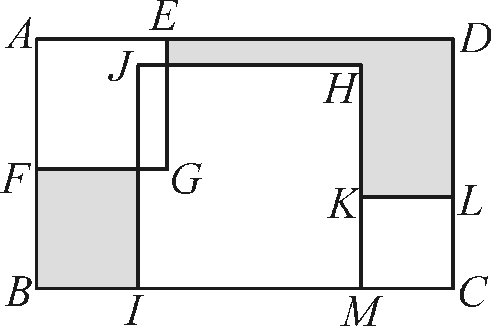
【答案】正方形JHMI
【分析】本题考查的是列代数式，整式加减的应用．设FG与JI的交点为X，EG与JH的交点为Y，则设GX=x，JX=y，正方形AEGF的边长为a，正方形JHMI的边长为b，正方形KLCM的边长为c，可以表示出所有的边长，然后可以表示出六边形EYHKLD的周长和四边形FBIX的周长，接着可以求出六边形EYHKLD的周长-四边形FBIX的周长的值，即可得出结果．
【详解】解：设FG与JI的交点为X，EG与JH的交点为Y，
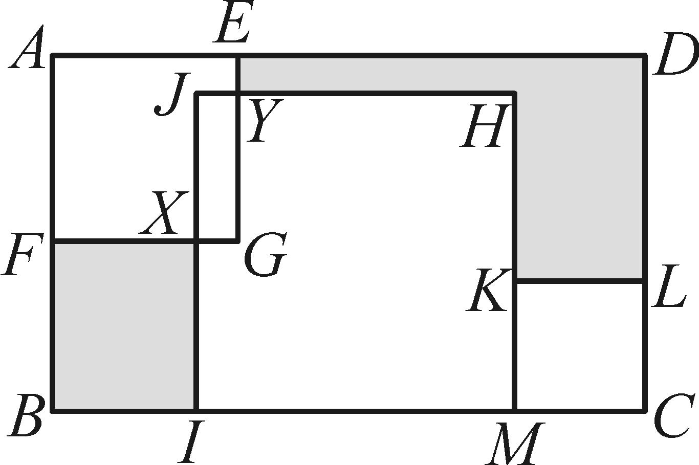
则设GX=x，JX=y，正方形AEGF的边长为a，正方形JHMI的边长为b，正方形KLCM的边长为c，
∴FX=a−x，XI=b−y，ED=b+c−x，EY=a−y，YH=b−x，HK=b−c，KL=c，DL=a+b−y−c，
∴四边形FBIX的周长=FB+BI+IX+FX=b−y+a−x+b−y+a−x=2a+2b−2x−2y，
∴六边形EYHKLD的周长=EY+YH+HK+KL+DL+ED
=a−y+b−x+b−c+c+a+b−c−y+b+c−x
=2a+4b−2y−2x，
∴六边形EYHKLD的周长-四边形FBIX的周长=2a+4b−2y−2x−2a+2b−2x−2y
=2b，
∴只要知道正方形JHMI的边长b，就可以求出两个阴影部分的周长之差，
∴只要知道正方形JHMI的面积可以得到两个阴影部分的周长之差．
2．（24-25七年级上·甘肃庆阳·期末）如图，长为a、宽为b的长方形被分割成七部分，除阴影部分P，Q外，其余五部分为形状和大小完全相同的小长方形M，其中小长方形M的宽为3．
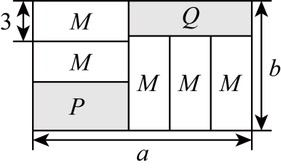
(1)小长方形M的长为_________；（用含a的代数式表示）．
(2)若b=12.5，你能否求出阴影图形P与阴影图形Q的周长之和？若能，请求出其值；若不能，请说明理由．
【答案】(1)a−9
(2)能，当b=12.5时，阴影图形P与阴影图形Q的周长之和为56
【分析】本题考查了根据几何图形列代数式，整式的加减等知识点，确定各几何图形的长和宽是解题关键．
（1）由图可知：3×小长方形的宽+小长方形的长=a，据此即可求解；
（2）由图可得阴影图形P的长为a−9，宽为b−6，阴影图形Q的长为9，宽为b−a−9=b−a+9，故阴影图形P和阴影图形Q的周长之和为2a−9+b−6+29+b−a+9 =4b+6，据此即可求解．
【详解】（1）解：∵小长方形M的宽为3，
∴小长方形M的长为a−3×3=a−9，
答：小长方形M的长为a−9；
（2）解：由图可得：阴影图形P的长为a−9，宽为b−6；
阴影图形Q的长为9，宽为b−(a−9)=b−a+9．
则阴影图形P与阴影图形Q的周长之和为2(a−9+b−6)+2(9+b−a+9)
=2a−18+2b−12+18+2b−2a+18
=4b+6，
所以阴影图形P与阴影图形Q的周长之和与a的值无关，
故若b=12.5，能求出阴影图形P与阴影图形Q的周长之和．
当b=12.5时，4b+6=4×12.5+6=56，
故当b=12.5时，阴影图形P与阴影图形Q的周长之和为56．
3．（24-25七年级上·湖北武汉·期中）如图，有足够多的完全相同的小长方形（图1）和一个大长方形纸片．小长方形两邻边的长分别记为a，b，把小长方形纸片不重叠的摆放在大长方形上，阴影是小长方形没有覆盖的部分，分别记为S1，S2．

(1)如图2，若a=2，b=4，AC=10，直接写出S1的面积=____ ，S2的面积= ____；
(2)如图2，当AB=15，AC=10时，直接写出S1和S2的周长和是 ____ ；
(3)如图3，若大长方形分割为6个小正方形，且中间的最小正方形的边长是1，求大长方形的面积．
【答案】(1)48，8
(2)40
(3)143
【分析】（1）由图可得EF=4a=8，AE=b=4，EC=10−b=6，BJ=b=4，BH=10−4a=2，再由矩形的面积公式求解即可；
（2）根据题意分别求出BJ=15−4a=b，EC=10−b，EF=4a，BH=10−4a，再由矩形的周长公式求解即可；
（3）设HL=m，利用BD的长建立等量关系3m−1=2m+3，求出m的值即可求解；
本题考查了整式加减的几何应用，正确识图是解题的关键．
【详解】（1）解：如图2，由图可得，EF=4a=8，AE=b=4，
∵AC=10，
∴EC=10−b=10−4=6，
∴S1的面积=EC·EF=6×8=48，
∵BJ=b=4，BH=10−4a=10−4×2=2，
∴S2的面积=BJ·BH=4×2=8，
故答案为：48，8；
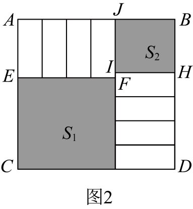
（2）解：∵AB=15，AC=BD=10，AJ=EF=DH=4a，
∴BJ=AB−AJ=15−4a=b，EC=AC−AE=10−b，BH=BD−DH=10−4a，
∴S1的周长=2EC+EF=210−b+4a=20−2b+8a，
S2的周长=2BJ+BH=2b+10−4a=2b+20−8a，
∴S1和S2的周长和=20−2b+8a+2b+20−8a=40，
故答案为：40；
（3）解：设HL=m，
∵GH=GK=HI=KI=1，
∴GL=FC=FG=1+m，JM=JN=ND=HL=m，IJ=m−1，
∴EB=BN=IN=IJ+JN=m+m−1=2m−1，AE=AF=FK=FG+GK=m+2，
∴AB=AE+BE=m+2+2m−1=3m+1，AC=AF+FC=m+2+m+1=2m+3，
∵BD=BN+ND=2m−1+m=3m−1，AC=BD，
∴3m−1=2m+3，
∴m=4，
∴AB=3m+1=13，AC=3m−1=11，
∴大长方形的面积为13×11=143．
【考点25 数轴动点问题】
1.（24-25七年级上·安徽滁州·期末）将两个完全相同的长方形ABCD，EFCH按如图所示方式放置在数轴上．
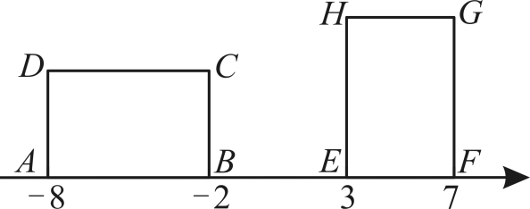
(1)若点P在线段BE上，且PA+PB=12，求点P在数轴上表示的数．
(2)若长方形ABCD，EFCH分别以每秒2个单位长度和1个单位长度在数轴上相向而行，设两个长方形重叠部分的面积S，移动时间为t秒．
①在整个运动过程中，S的最大值是多少？持续时间为多少秒？
②当S是长方形ABCD的面积的一半时，求t的值．
【答案】(1)1；
(2)①16；23秒；②83或4．
【分析】本题主要考查了数轴上两点的距离的应用，动点问题，方程的应用，熟练掌握以上知识是解题的关键．
（1）根据已知条件得出AB，设PB=x，则PA=x+6，再根据PA+PB=12列方程，求解即可得点P表示的数，
（2）①结合图形可得，当点B和点F重合时，到点A和点E重合时，重叠所形成的部分为长和宽均为4的正方形时，面积最大，即可求出S的最大值，根据EF=4，AB=6，可得持续的距离，从而列式求解即可；②本题求解时应根据当B在EF之间时，点A在EF之间时，根据S是长方形ABCD面积一半列方程，可得结论．
【详解】（1）解：由图可得：AB=−2−−8=6
∴设PB=x，则PA=PB+AB=x+6，
∵PA+PB=12
∴x+x+6=12，
解得：x=3，
∵−2+3=1，
∴点P表示的数为1．
（2）解：①由图可得EF=7−3=4，
∵长方形ABCD，EFCH完全相同，
∴EF=HG=BC=AD=4，
∴当点B和点F重合时，到点A和点E重合时，重叠所形成的部分为长和宽均为4的正方形时，面积最大，
∴重叠所形成的部分最大面积为：S最大=4×4=16，
∵EF=4，AB=6，
∴持续的距离为6−4=2，
∵长方形ABCD，EFCH分别以每秒2个单位长度和1个单位长度在数轴上相向而行，
∴2+1⋅t=2，
解得：t=23，
∴S最大值为16，持续时间为23秒．
②解：∵BC=4，AB=6，BE=3−−2=5
∴长方形ABCD的面积为：4×6=24，
当S是长方形ABCD的面积的一半时，即面积为：S=24÷2=12，
当B在EF之间时，如图：
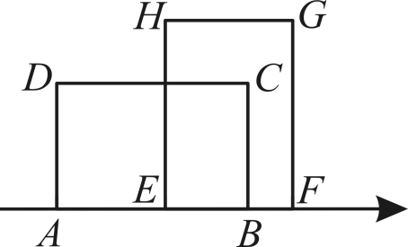
∵BC=4，S=12，
∴BE=SBC=124=3，
∴移动距离为3+5=8
∴2+1⋅t=8，
解得：t=83
当点A在EF之间时，如图：
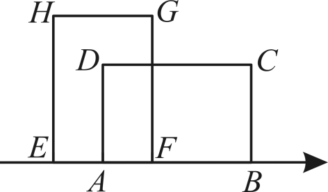
同理可得AF=3，移动距离为4+5+3=12，
∴2+1⋅t=12，
解得：t=4，
综上可得：t的值为83或4．
2.（25-26七年级上·江苏扬州·阶段练习）如图，数轴上A、B、C三点表示的数分别为a、b、c，且a、b满足|a+8|+(b−12)2=0．
(1)则a= ，b= ；
(2)动点P从A点出发，以每秒10个单位的速度沿数轴向右运动，到达B点停留片刻后立即以每秒6个单位的速度沿数轴返回到A点，共用了6秒；其中从C到B，返回时从B到C(包括在B点停留的时间)共用了2秒．
①求C点表示的数c；
②设运动时间为t秒，求t为何值时，点P到A、B、C三点的距离之和为23个单位？
【答案】(1)−8；12；
(2)①7；②1.2或1.8或3或4
【分析】本题主要考查了数轴上的动点问题，方程的应用，非负数的性质，利用分类讨论的思想求解是解题的关键．
（1）根据非负数的性质求解即可；
（2）①可求出点P从点A到C和从点C返回到点A的总时间为6−2=4秒，设点C表示的数为x，则AC=x+8，根据时间等于路程除以速度建立方程求解即可；②先分P从A到B，且点A在AC上运动和P从A到B，且点A在CB上运动两种情况，根据数轴上两点距离计算公式建立方程求出此时t的值，进而得到点P运动到何处时，点P到A、B、C三点的距离之和为23个单位；再求出点P在点B停留的时间，进而根据点P从点B返回到点A途中在何处时点P到A、B、C三点的距离之和为23个单位建立方程求出此过程中t的值即可得到答案．
【详解】（1）解：∵a+8+b−122=0，a+8≥0，b−122≥0，
∴a+8=b−122=0，
∴a+8=0，b−12=0，
∴a=−8，b=12；
（2）解：①由题意得，点P从点A到C和从点C返回到点A的总时间为6−2=4秒，
设点C表示的数为x，则AC=x−−8=x+8，
∴x+810+x+86=4，
解得x=7，
∴点C表示的数为7；
②当P从A到B，且点P在AC上运动时，
由题意得10t+7−−8+10t+12−−8+10t=23，
解得：t=1.2，此时点P表示的数为−8+10×1.2=4，
当P从A到B，且点P在CB上运动时，
由题意得10t+−8+10t−7+12−−8+10t=23，
解得：t=1.8，即此时点P表示的数为−8+10×1.8=10；
∵从C到B，返回时从B到C(包括在B点停留的时间)共用了2秒，12−710+12−76=43秒，
∴停留时间为2−43=23秒，
∵当点P从点B返回到A的途中走到表示数10的位置时，点P到A、B、C三点的距离之和为23个单位，
∴此时t=12−−810+23+12−106=3；
∵当点P从点B返回到A的途中走到表示数4的位置时，点P到A、B、C三点的距离之和为23个单位，
∴此时t=12−−810+23+12−46=4；
综上所述，当t的值为1.2或1.8或3或4时，点P到A、B、C三点的距离之和为23个单位．
（24-25七年级上·广东广州·阶段练习）如图：在数轴上点A表示数−3，点B表示数1，点C表示数9，点A、点B和点C分别以每秒2个单位长度、1个单位长度和4个单位长度的速度在数轴上同时向左运动，设运动时间为t秒（t＞0）．
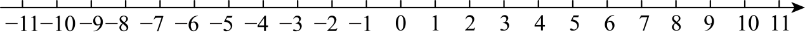
(1)结合数轴，完成下列问题：AB表示点A到点B之间的距离，运动之前，AB的距离为 ，A点与C点的中点为D，则点D表示的数为 ；运动t秒后，点A表示的数为 （用含t的式子表示）；
(2)若t秒钟过后，A，B，C三点中恰有一点为另外两点的中点，求t值；
(3)当点C在点B右侧时，是否存在常数m，使mBC−2AB的值为定值？若存在，求m的值，若不存在，请说明理由．
【答案】(1)4；3；−3−2t
(2)1或4或16
(3)存在，m=−23
【分析】（1）根据数轴上两点之间的距离公式计算可求出AB的长，根据数轴上线段中点的计算公式可求出点D表示的数，根据点A的运动速度即可求出运动t秒后，点A表示的数；
（2）t秒钟过后，点A表示的数为−3−2t，点B表示的数为1−t，点C表示的数为9−4t，分三种情况：①若B为AC中点；②若C为AB中点；③若A为BC中点，分别列出方程求解即可；
（3）当点C在点B右侧时，表示出BC、AB的长，再计算mBC−2AB，整理成−3m−2t+8m−8，令−3m−2=0，求出m的值即可．
【详解】（1）解：∵在数轴上点A表示数−3，点B表示数1，
∴AB的距离为：1−−3=1+3=4；
又∵点A表示数−3，点C表示数9，点D为AC中点，
∴点D表示的数为：−3+92=3；
∵点A表示数−3，且以每秒2个单位长度向左运动，
∴运动t秒后，点A表示的数为−3−2t，
故答案为：4；3；−3−2t；
（2）由题意可知，t秒钟过后，点A表示的数为−3−2t，点B表示的数为1−t，点C表示的数为9−4t，
分三种情况：
①若B为AC中点，则：1−t=−3−2t+9−4t2，
解得：t=1；
②若C为AB中点，则：9−4t=−3−2t+1−t2，
解得：t=4；
③若A为BC中点，则：−3−2t=1−t+9−4t2，
解得：t=16；
综上所述，当t=1或4或16时，A，B，C三点中恰有一点为另外两点的中点；
（3）存在．
∵点C在点B右侧，点B在点A右侧，
∴BC=9−4t−1−t=8−3t，AB=1−t−−3−2t=t+4，
∴mBC−2AB=m8−3t−2t+4=8m−3mt−2t−8=−3m−2t+8m−8，
当−3m−2=0，即m=−23时，mBC−2AB结果与t无关，
此时mBC−2AB=8×−23−8=−403为定值，
∴存在常数m=−23使mBC−2AB的值为定值．
【点睛】本题考查数轴，列代数式，两点间距离，方程的应用，正确理解题意，能用代数式表示出点所表示的数是解题的关键.